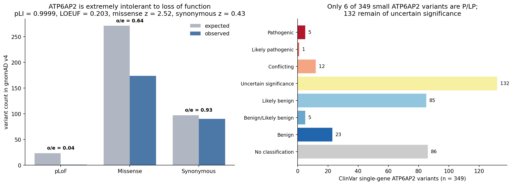
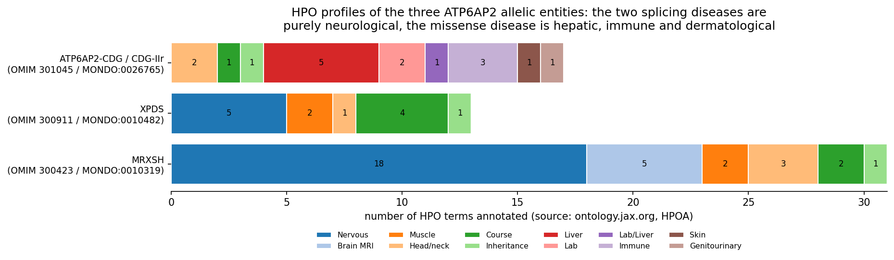
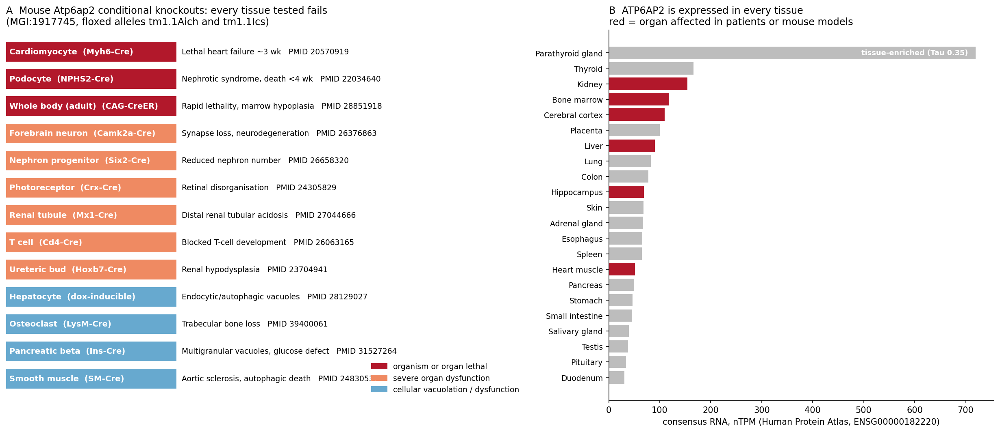

ATP6AP2-Related Disorder
An X-linked disorder caused by hypomorphic variants in ATP6AP2, which encodes an accessory subunit and endoplasmic-reticulum assembly factor of the vacuolar H+-ATPase (and, in a separate context, the (pro)renin receptor). Complete loss of ATP6AP2 is not compatible with life, so only partial-loss alleles reach the clinic, and the class of allele rather than the identity of the disease decides which organ fails. Variants that disrupt splicing halve the full-length transcript and produce the neurological presentations — syndromic intellectual disability with epilepsy, and parkinsonism with spasticity — while missense variants in the luminal extracellular domain destabilise the protein and break its interaction with ATP6AP1, producing a congenital disorder of glycosylation with hepatopathy, immunological abnormality and cutis laxa. All converge on one mechanism: impaired assembly of the V-ATPase V0 sector in the ER, then defective organelle acidification, reduced mTOR signalling and autophagic misregulation.
Ask OpenScientist
Ask a research question about ATP6AP2-Related Disorder. OpenScientist will conduct autonomous deep research using the Disorder Mechanisms Knowledge Base and PubMed literature (typically 10-30 minutes).
Do not include personal health information in your question. Questions and results are cached in your browser's local storage.
Inheritance
1Show evidence (1 reference)
Subtypes
3Show evidence (1 reference)
Show evidence (1 reference)
Show evidence (2 references)
Discussions and Knowledge Gaps
1Pathophysiology
8Show evidence (4 references)
Show evidence (1 reference)
Show evidence (2 references)
Show evidence (1 reference)
Show evidence (2 references)
Show evidence (1 reference)
Show evidence (2 references)
Pathograph
Phenotypes
8Head and Neck 1
Show evidence (1 reference)
Metabolism 1
Show evidence (1 reference)
Musculoskeletal 2
Show evidence (1 reference)
Show evidence (1 reference)
Nervous System 4
Show evidence (1 reference)
Show evidence (1 reference)
Show evidence (1 reference)
Show evidence (1 reference)
Genetic Associations
1Show evidence (4 references)
Medical Actions
1Show evidence (1 reference)
Diagnosis
1Show evidence (1 reference)
Differential Diagnoses
3Conditions with similar clinical presentations that must be differentiated from ATP6AP2-Related Disorder:
Animal Models
1Show evidence (1 reference)
Show evidence (1 reference)
Source YAML
click to showname: ATP6AP2-Related Disorder
category: Mendelian
creation_date: "2026-11-26T18:30:00Z"
synonyms:
- ATP6AP2-related disorder
- ATP6AP2 deficiency
description: >-
An X-linked disorder caused by hypomorphic variants in ATP6AP2, which encodes an
accessory subunit and endoplasmic-reticulum assembly factor of the vacuolar H+-ATPase
(and, in a separate context, the (pro)renin receptor). Complete loss of ATP6AP2 is not
compatible with life, so only partial-loss alleles reach the clinic, and the class of
allele rather than the identity of the disease decides which organ fails. Variants
that disrupt splicing halve the full-length transcript and produce the
neurological presentations — syndromic intellectual disability with epilepsy, and
parkinsonism with spasticity — while missense variants in the luminal extracellular
domain destabilise the protein and break its interaction with ATP6AP1, producing a
congenital disorder of glycosylation with hepatopathy, immunological abnormality and
cutis laxa. All converge on one mechanism: impaired assembly of the V-ATPase V0 sector
in the ER, then defective organelle acidification, reduced mTOR signalling and
autophagic misregulation.
disease_term:
preferred_term: ATP6AP2-related disorder
term:
id: MONDO:0100146
label: ATP6AP2-related disorder
parents:
- X-linked syndromic intellectual disability
notes: >-
Scope, and why the three ATP6AP2 phenotypes are not all modelled here. ATP6AP2 maps to
three OMIM phenotype entries, and the two authorities disagree about whether they are
one disease. The ClinGen Intellectual Disability and Autism Gene Curation Expert Panel
curates a single gene-disease relationship, named ATP6AP2-related disorder and keyed on
this entry's own MONDO term, and names all three OMIM phenotypes as its manifestations;
that assertion is quoted in the genetic record. MONDO splits them, and splits them
unevenly: MONDO:0100146 has exactly two descendants, the two neurological entities,
while the glycosylation phenotype sits at MONDO:0026765 under congenital disorder of
glycosylation type II, in the metabolic branch, with no path back to this term.
dismech follows MONDO here, for a reason that is about this knowledge base rather than
about the biology: the glycosylation phenotype is already curated as its own entry,
Congenital_Disorder_of_Glycosylation_Type_IIr. So this entry's own scope is
MONDO:0100146 as MONDO draws it, the two neurological entities, which are carried as
real subtypes; and ATP6AP2-CDG is carried as a pointer subtype with `curated_in`, so
the gene's third phenotype is discoverable from here without being modelled twice.
Modelling it here as well would have duplicated that entry's phenotypes, hepatic
mechanism and treatments, and left two records to keep in step.
The two neurological entities are lumped, and that part is this entry's own call. The
grounds are that both are caused by splicing variants acting through one mechanism,
reduction of the full-length transcript, which PMID:35779466 states as its conclusion
across alleles affecting different exons; that no reported allele in either entity is
a null; and that ClinGen curates them within one gene-disease relationship.
One ground originally given here has been withdrawn. The entry first argued that the
two entities share their extrapyramidal and pyramidal features. On checking the
sources, every citation here for spasticity is an XPDS source, the MRXSH founding
report does not mention spasticity, and the only sentence pairing spasticity with
MRXSH is the 2025 abstract sentence whose acronym-to-identifier pairing is recorded
below as unreliable. The Spasticity phenotype row is therefore scoped to XPDS, and the
shared-features claim is not made. The lump rests on the mechanism and the allele
spectrum instead.
The mechanism curated here is shared with the separately curated CDG entry, and that
is deliberate rather than an oversight. Both run through impaired V-ATPase V0 assembly
in the endoplasmic reticulum and defective organelle acidification; the entries differ
below that point, where the allele class decides the organ. The glycosylation node is
kept in this entry, rather than left to the CDG entry, because PMID:41131679 found the
glycosylation abnormality in patients with purely neurological disease: on the
neurological side it is a finding about these patients, not a borrowed feature of the
hepatic phenotype. The organ specificity itself is recorded as an open question in
discussions.
Inheritance is recorded as X-linked rather than X-linked recessive. All three OMIM
entries annotate X-linked recessive inheritance, but the 2025 series reports an
affected heterozygous female with a milder phenotype, so the recessive qualifier is
not safe for the disease as a whole; the more specific term would assert a pattern the
current literature contradicts.
A published abstract transposes two acronyms, and this entry does not follow it. The
2025 report's abstract pairs "Hedera type" with the acronym XPDS and OMIM 300423, and
"X-linked parkinsonism with spasticity" with MRXSH and OMIM 300911. MONDO:0010319,
intellectual developmental disorder, X-linked, syndromic, Hedera type, carries the
xref OMIM:300423, so the Hedera-type entry is 300423 and XPDS is 300911, which is the
mapping used here. That sentence is quotable for its clinical content but not for its
acronym-to-identifier pairing.
inheritance:
- name: X-linked
inheritance_term:
preferred_term: X-linked inheritance
term:
id: HP:0001417
label: X-linked inheritance
description: >-
Hemizygous males are affected. Heterozygous females were long regarded as unaffected
carriers, and all three OMIM entries annotate X-linked recessive inheritance, but an
affected female with a milder phenotype has now been reported, plausibly through
skewed X-inactivation.
evidence:
- reference: PMID:41131679
reference_title: "ATP6AP2-Related Disease Caused by Splicing Defects: Abnormal Glycosylation and the First Affected Female."
supports: SUPPORT
directness: DIRECT
evidence_source: HUMAN_CLINICAL
snippet: "the heterozygous female has a milder phenotype"
explanation: >-
The report of an affected heterozygous female, which is why this entry binds
X-linked inheritance rather than the X-linked recessive term the OMIM entries
carry.
genetic:
- name: ATP6AP2
gene_term:
preferred_term: ATP6AP2
term:
id: hgnc:18305
label: ATP6AP2
relationship_type: CAUSATIVE
evidence:
- reference: PMID:15746149
reference_title: A unique exonic splice enhancer mutation in a family with X-linked mental retardation and epilepsy points to a novel role of the renin receptor.
supports: SUPPORT
directness: DIRECT
evidence_source: HUMAN_CLINICAL
snippet: "We report a unique mutation in the renin receptor gene (ATP6AP2) present in patients with X-linked mental retardation and epilepsy"
explanation: >-
The founding report tying ATP6AP2 to the Hedera-type intellectual disability and
epilepsy phenotype.
- reference: PMID:23595882
reference_title: Altered splicing of ATP6AP2 causes X-linked parkinsonism with spasticity (XPDS).
supports: SUPPORT
directness: DIRECT
evidence_source: HUMAN_CLINICAL
snippet: "X-linked parkinsonism with spasticity (XPDS) presents either as typical adult onset Parkinson's disease or earlier onset spasticity followed by parkinsonism."
explanation: >-
Establishes the second neurological presentation and its two ages of onset.
- reference: PMID:29127204
reference_title: Mutations in the X-linked ATP6AP2 cause a glycosylation disorder with autophagic defects.
supports: SUPPORT
directness: DIRECT
evidence_source: IN_VITRO
snippet: "impaired protein stability and the interaction with ATP6AP1, a member of the V0 assembly complex"
explanation: >-
Shows what the extracellular-domain missense alleles do, which is the molecular
basis of the glycosylation presentation.
- reference: CGGV:assertion_ac33652a-dd98-46f4-ba4e-d3d5a482a22e-2020-09-14T160000.000Z
reference_title: ATP6AP2 / ATP6AP2-related disorder (Definitive)
supports: SUPPORT
directness: DIRECT
evidence_source: OTHER
snippet: "Defects in the ATP6AP2 gene may result in 1) MRXSH (mental retardation, X-linked, syndromic, Hedera type), 2) Congenital disorder of glycosylation, type IIr, and 3) Parkinsonism with spasticity, X-linked (see OMIM)."
explanation: >-
A ClinGen expert panel curated ATP6AP2 as a single gene-disease relationship
spanning all three OMIM phenotypes, which is independent support for this entry's
decision to carry them as subtypes of one disease rather than as separate entries.
gene_disease_validity:
- validity_classification: DEFINITIVE
classified_by: CLINGEN
external_id: CGGV:assertion_ac33652a-dd98-46f4-ba4e-d3d5a482a22e-2020-09-14T160000.000Z
evidence:
- reference: CGGV:assertion_ac33652a-dd98-46f4-ba4e-d3d5a482a22e-2020-09-14T160000.000Z
reference_title: ATP6AP2 / ATP6AP2-related disorder (Definitive)
supports: SUPPORT
evidence_source: OTHER
snippet: "ATP6AP2 | HGNC:18305 | ATP6AP2-related disorder | MONDO:0100146 | XL | Definitive | SOP7 | Intellectual Disability and Autism Gene Curation Expert Panel | 2020-09-14T16:00:00.000Z"
explanation: >-
The ClinGen gene-disease validity row carrying this classification.
notes: >-
The gene identifier is hgnc:18305, read from HGNC. Pathogenic alleles are
overwhelmingly synonymous or intronic variants acting on splicing, so a
protein-centric variant filter will miss this disease: the alleles that establish it
are the ones an in-silico missense predictor scores as silent.
has_subtypes:
- name: MRXSH
display_name: Syndromic X-linked intellectual disability, Hedera type (MRXSH)
description: >-
Intellectual disability with epilepsy, caused by exon-4-skipping splicing variants.
This is OMIM 300423, the entry first defined in the Hedera kindred.
subtype_term:
preferred_term: intellectual developmental disorder, X-linked, syndromic, Hedera type
term:
id: MONDO:0010319
label: intellectual developmental disorder, X-linked, syndromic, Hedera type
genes:
- preferred_term: ATP6AP2
term:
id: hgnc:18305
label: ATP6AP2
evidence:
- reference: PMID:15746149
reference_title: A unique exonic splice enhancer mutation in a family with X-linked mental retardation and epilepsy points to a novel role of the renin receptor.
supports: SUPPORT
directness: DIRECT
evidence_source: HUMAN_CLINICAL
snippet: "We report a unique mutation in the renin receptor gene (ATP6AP2) present in patients with X-linked mental retardation and epilepsy"
explanation: >-
The founding description of this subtype.
- name: XPDS
display_name: X-linked parkinsonism with spasticity (XPDS)
description: >-
Parkinsonism with spasticity, presenting either as typical adult-onset Parkinson
disease or as earlier-onset spasticity followed by parkinsonism, and also caused by
exon-4-skipping splicing variants. This is OMIM 300911. It shares its extrapyramidal
and pyramidal features with MRXSH and lacks the developmental and epileptic layer,
which is why the two are curated as subtypes of one disease rather than as separate
entries.
subtype_term:
preferred_term: X-linked parkinsonism-spasticity syndrome
term:
id: MONDO:0010482
label: X-linked parkinsonism-spasticity syndrome
genes:
- preferred_term: ATP6AP2
term:
id: hgnc:18305
label: ATP6AP2
evidence:
- reference: PMID:23595882
reference_title: Altered splicing of ATP6AP2 causes X-linked parkinsonism with spasticity (XPDS).
supports: SUPPORT
directness: DIRECT
evidence_source: HUMAN_CLINICAL
snippet: "X-linked parkinsonism with spasticity (XPDS) presents either as typical adult onset Parkinson's disease or earlier onset spasticity followed by parkinsonism."
explanation: >-
Defines this subtype and its two presentations.
- name: ATP6AP2-CDG
display_name: ATP6AP2-congenital disorder of glycosylation (curated separately)
curated_in: Congenital_Disorder_of_Glycosylation_Type_IIr
subtype_term:
preferred_term: congenital disorder of glycosylation, type IIr
term:
id: MONDO:0026765
label: congenital disorder of glycosylation, type IIr
description: >-
Hepatopathy with immunological abnormality, cutis laxa and mild intellectual
disability, together with N- and O-glycosylation defects, caused by hemizygous
missense variants in the luminal extracellular domain that destabilise the protein
and break its interaction with ATP6AP1. This is OMIM 301045.
This row is a pointer, not a disease modelled here. dismech curates this phenotype
as its own entry, Congenital_Disorder_of_Glycosylation_Type_IIr, bound to
MONDO:0026765, and that entry holds its phenotypes, its hepatic mechanism and its
treatments. The row exists so that a reader arriving at the gene-level entry learns
that the same gene causes a third phenotype and where it is curated.
genes:
- preferred_term: ATP6AP2
term:
id: hgnc:18305
label: ATP6AP2
evidence:
- reference: PMID:29127204
reference_title: Mutations in the X-linked ATP6AP2 cause a glycosylation disorder with autophagic defects.
supports: SUPPORT
directness: DIRECT
evidence_source: IN_VITRO
snippet: "impaired protein stability and the interaction with ATP6AP1, a member of the V0 assembly complex"
explanation: >-
Identifies the mechanism specific to this subtype's missense alleles.
- reference: CGGV:assertion_ac33652a-dd98-46f4-ba4e-d3d5a482a22e-2020-09-14T160000.000Z
reference_title: ATP6AP2 / ATP6AP2-related disorder (Definitive)
supports: SUPPORT
directness: DIRECT
evidence_source: OTHER
snippet: "2) Congenital disorder of glycosylation, type IIr"
explanation: >-
Source for the name used in this subtype's description, and for its being one of
the three recognised manifestations of the single gene-disease relationship.
pathophysiology:
- name: Hypomorphic ATP6AP2 Variant
description: >-
A partial-loss X-linked allele. Every pathogenic allele reported in this disease is
a hypomorph rather than a null, and the class of allele sets which presentation
follows. This entry does not assert a population-genetic reason for that, because no
source cited here measures ATP6AP2 constraint; the claim is about the reported
allele spectrum.
biological_scale: MOLECULAR
genetic_context:
variant_origin: GERMLINE
functional_impact_category: PARTIAL_LOSS_OF_FUNCTION
genes:
- preferred_term: ATP6AP2
term:
id: hgnc:18305
label: ATP6AP2
molecular_functions:
- preferred_term: V-ATPase V0 assembly adaptor activity
term:
id: GO:0030674
label: protein-macromolecule adaptor activity
modifier: DECREASED
downstream:
- target: Aberrant Splicing and Reduced Full-Length Transcript
causal_link_type: DIRECT
description: >-
The splicing-variant route, which produces the neurological presentations.
- target: Destabilised Extracellular Domain and Lost ATP6AP1 Binding
causal_link_type: DIRECT
description: >-
The missense route, which produces the glycosylation presentation.
notes: >-
The molecular function bound here is the adaptor activity ATP6AP2 provides during
V-ATPase assembly, which is what the structural and cross-species genetic work cited
below establishes. It is deliberately not a catalytic term: ATP6AP2 is an assembly
factor and accessory subunit, not a catalytic subunit of the pump.
On reduced dosage versus a dominant-negative effect. PMID:30985297 reports that the
deficiencies in patient iPSC-derived neurons were rescued by expressing full-length
ATP6AP2, and this entry models the disease as reduced dosage rather than as
interference by the short isoform. That reading is an inference and is recorded here
rather than on an evidence item: the abstract does not state that the short isoform
was still present during the rescue, so the experiment as reported does not by itself
exclude a dominant-negative contribution.
- name: Aberrant Splicing and Reduced Full-Length Transcript
description: >-
Splicing-modulating variants reduce the functional full-length transcript to roughly
half. Which exon they act on varies, and the dosage reduction rather than any one
exon is the general mechanism: the classic alleles of both neurological
presentations raise a minor isoform lacking the exon-4-encoded residues, while
c.168+6T>A acts on exon 2 and the 2025 series reports exon 5 skipping, exon 8
skipping and a pseudoexon insertion. The resulting short isoforms are inert in the
complex rather than toxic to it, so the pathogenic unit is the missing quantity of
normal protein.
biological_scale: MOLECULAR
downstream:
- target: Impaired V-ATPase V0 Assembly in the Endoplasmic Reticulum
causal_link_type: DIRECT
description: >-
Less full-length protein means less assembly-competent adaptor.
evidence:
- reference: PMID:35779466
reference_title: Reduced gene dosage is a common mechanism of neuropathologies caused by ATP6AP2 splicing mutations.
supports: SUPPORT
directness: DIRECT
evidence_source: HUMAN_CLINICAL
quote_role: BACKGROUND
snippet: "All previously reported splicing mutations increase the level of a minor isoform with skipped exon 4"
explanation: >-
Establishes the exon 4 isoform as the mechanism of the alleles reported before this
study. Tagged BACKGROUND because the sentence sits in the abstract's background
paragraph and describes other groups' alleles, which is also why it must not be
read as this paper's own finding or as covering every allele now known.
- reference: PMID:35779466
reference_title: Reduced gene dosage is a common mechanism of neuropathologies caused by ATP6AP2 splicing mutations.
supports: SUPPORT
directness: DIRECT
evidence_source: IN_VITRO
snippet: "This results in out-of-frame splicing products and a reciprocal 50% reduction in functional full-length ATP6AP2 transcripts."
explanation: >-
Quantifies the dosage reduction, for the c.168+6T>A allele, which acts on exon 2
rather than exon 4. Graded IN_VITRO because the paper's methods state the
measurement was made by RNA-Seq and qRT-PCR on induced pluripotent stem cells from
patients reprogrammed to neural progenitor cells. This is the item that shows the
node is about dosage rather than about one exon.
- reference: PMID:24223829
reference_title: The role of individual domains and the significance of shedding of ATP6AP2/(pro)renin receptor in vacuolar H(+)-ATPase biogenesis.
supports: SUPPORT
directness: DIRECT
evidence_source: IN_VITRO
snippet: "was defective as a V-ATPase-associated protein"
explanation: >-
Shows the exon-4-deleted isoform fails as a V-ATPase-associated protein, which is
why halving the full-length transcript is not compensated by the short isoform.
This item is specifically about the exon 4 isoform, which is why it is kept beside
the dosage items rather than replaced by them.
- reference: PMID:35779466
reference_title: Reduced gene dosage is a common mechanism of neuropathologies caused by ATP6AP2 splicing mutations.
supports: SUPPORT
directness: DIRECT
evidence_source: HUMAN_CLINICAL
snippet: "A common pathogenic consequence of splicing mutations affecting inclusion of different ATP6AP2 exons is reduction of the functional full-length transcript."
explanation: >-
The paper's own conclusion, and the sentence this node is named for: the shared
mechanism is loss of full-length transcript across alleles acting on different
exons, not skipping of any one exon.
- name: Destabilised Extracellular Domain and Lost ATP6AP1 Binding
description: >-
Missense variants in the luminal extracellular domain reduce protein stability and
abolish the interaction with ATP6AP1, the glycosylated V0 partner, so assembly fails
for a different reason than in the splicing route while converging on the same step.
biological_scale: MOLECULAR
downstream:
- target: Impaired V-ATPase V0 Assembly in the Endoplasmic Reticulum
causal_link_type: DIRECT
description: >-
Loss of the ATP6AP1 interaction removes the partnership the assembly step requires.
evidence:
- reference: PMID:29127204
reference_title: Mutations in the X-linked ATP6AP2 cause a glycosylation disorder with autophagic defects.
supports: SUPPORT
directness: DIRECT
evidence_source: IN_VITRO
snippet: "impaired protein stability and the interaction with ATP6AP1, a member of the V0 assembly complex"
explanation: >-
Direct functional characterisation of the missense alleles' effect on stability
and on the assembly partnership.
- name: Impaired V-ATPase V0 Assembly in the Endoplasmic Reticulum
description: >-
ATP6AP2 acts with ATP6AP1 in the endoplasmic reticulum, before the pump reaches its
destination compartment, and its C-terminal ER-retrieval motif is required for that
function while proteolytic cleavage is not. Reduced adaptor availability leaves the
V0 sector incompletely assembled.
biological_scale: MOLECULAR
biological_processes:
- preferred_term: vacuolar proton-transporting V-type ATPase complex assembly
term:
id: GO:0070072
label: vacuolar proton-transporting V-type ATPase complex assembly
modifier: DECREASED
cellular_components:
- preferred_term: lysosomal V-ATPase complex
term:
id: GO:0046611
label: lysosomal proton-transporting V-type ATPase complex
modifier: DECREASED
downstream:
- target: Defective Organelle Acidification
causal_link_type: DIRECT
description: >-
An incompletely assembled pump cannot acidify its compartment.
evidence:
- reference: PMID:29995586
reference_title: ATP6AP2 functions as a V-ATPase assembly factor in the endoplasmic reticulum.
supports: SUPPORT
directness: DIRECT
evidence_source: MODEL_ORGANISM
snippet: "Structure-function analyses in both yeast and Drosophila show that proteolytic cleavage is dispensable, while C-terminus-dependent ER retrieval is required for ATP6AP2 function."
explanation: >-
Locates the function in the ER and identifies which part of the protein the
function depends on. Graded MODEL_ORGANISM because the quoted sentence reports
whole-organism genetics in two species, including Drosophila in vivo; the same
paper's yeast complementation is a separate claim and is not what this sentence
carries.
- reference: PMID:32165585
reference_title: Structure of V-ATPase from the mammalian brain.
supports: SUPPORT
directness: DIRECT
evidence_source: IN_VITRO
snippet: "This structure shows how ATP6AP1/Ac45 and ATP6AP2/PRR enable assembly of the enzyme's catalytic and membrane regions."
explanation: >-
Structural evidence placing ATP6AP2 inside the pump and assigning it an assembly
role for the catalytic and membrane regions.
- name: Defective Organelle Acidification
description: >-
Lysosomal and Golgi lumens are insufficiently acidified. This is the step at which
every allele class converges, and the branch point from which the neurological and
glycosylation consequences separate.
biological_scale: CELLULAR
biological_processes:
- preferred_term: lysosomal lumen acidification
term:
id: GO:0007042
label: lysosomal lumen acidification
modifier: DECREASED
downstream:
- target: Reduced mTOR Signalling and Autophagic Misregulation
causal_link_type: DIRECT
description: >-
Lysosomal acidification is required for the degradative and signalling functions
that follow.
- target: Secondary Glycosylation Defect of Other Proteins
causal_link_type: DIRECT
description: >-
Golgi glycosyltransferases depend on luminal pH, so under-acidification impairs
glycosylation of other proteins.
evidence:
- reference: PMID:29388887
reference_title: Mutations in ATP6AP2 cause autophagic liver disease in humans.
supports: SUPPORT
directness: DIRECT
evidence_source: HUMAN_CLINICAL
snippet: "pathogenetic cascade that includes impaired V-ATPase assembly, defective lysosomal acidification, reduced MTOR signaling and autophagic misregulation"
explanation: >-
States the ordered cascade this node and the next two implement, from the authors
of the hepatic series.
- name: Reduced mTOR Signalling and Autophagic Misregulation
description: >-
Impaired lysosomal acidification reduces mTOR signalling and misregulates autophagy,
with failure of protein degradation. In patient neurons this ends in cell death, and
the deficits are reversible by supplying full-length protein.
biological_scale: CELLULAR
biological_processes:
- preferred_term: TOR signaling
term:
id: GO:0031929
label: TOR signaling
modifier: DECREASED
- preferred_term: regulation of macroautophagy
term:
id: GO:0016241
label: regulation of macroautophagy
modifier: DYSREGULATED
downstream:
- target: Neuronal Death and Impaired CNS Development
causal_link_type: DIRECT
description: >-
Failure of lysosomal degradation in neurons leads to their death.
evidence:
- reference: PMID:29388887
reference_title: Mutations in ATP6AP2 cause autophagic liver disease in humans.
supports: SUPPORT
directness: INDIRECT
evidence_source: HUMAN_CLINICAL
snippet: "pathogenetic cascade that includes impaired V-ATPase assembly, defective lysosomal acidification, reduced MTOR signaling and autophagic misregulation"
explanation: >-
The only source in this entry that names reduced mTOR signalling as part of the
cascade, and the reason this node binds a TOR term at all. Graded INDIRECT
deliberately: it was shown in the glycosylation presentation, which is curated as
its own entry, so applying it to the neurological arm is an inference from the
shared upstream mechanism rather than a measurement in these patients. No source
here reports mTOR signalling in the neurological presentation.
- reference: PMID:30985297
reference_title: ATP6AP2 variant impairs CNS development and neuronal survival to cause fulminant neurodegeneration.
supports: SUPPORT
directness: DIRECT
evidence_source: IN_VITRO
snippet: "severe deficiency in lysosomal acidification and protein degradation"
explanation: >-
Supports the protein-degradation half of this node in the neurological
presentation, measured in patient iPSC-derived neurons. It does not mention mTOR,
which is why the item above carries that part of the claim.
- name: Secondary Glycosylation Defect of Other Proteins
description: >-
Under-acidification of the Golgi impairs glycosylation of other proteins. ATP6AP2
itself carries no N-glycosylation sequon, so this is not a defect in glycosylating
ATP6AP2 but in the glycosylation machinery the pump supports, with its glycosylated
V0 partner ATP6AP1 among the affected proteins. The abnormality is detectable in
patients with purely neurological disease, not only in the hepatic presentation.
biological_scale: MOLECULAR
biological_processes:
- preferred_term: protein N-linked glycosylation
term:
id: GO:0006487
label: protein N-linked glycosylation
modifier: DECREASED
downstream:
- target: Type II transferrin isoform profile
causal_link_type: DIRECT
description: >-
The glycosylation defect is detectable as an abnormal serum transferrin isoform
profile.
evidence:
- reference: PMID:41131679
reference_title: "ATP6AP2-Related Disease Caused by Splicing Defects: Abnormal Glycosylation and the First Affected Female."
supports: SUPPORT
directness: DIRECT
evidence_source: HUMAN_CLINICAL
snippet: "This connects more closely the phenotypes of XPDS/MRXSH and ATP6AP2-CDG and indicates that abnormal glycosylation markers may be a consistent feature of splicing variants, and potentially part of the pathological mechanism."
explanation: >-
The finding that collapses the neurological/hepatic split this entry would
otherwise have been divided along, and the reason the glycosylation node sits on
the shared chain rather than only under the CDG subtype.
- name: Neuronal Death and Impaired CNS Development
description: >-
Reduced spontaneous activity, failure of protein degradation and neuronal death,
with impaired central nervous system development in the most severe reported allele.
biological_scale: TISSUE
cell_types:
- preferred_term: neuron
term:
id: CL:0000540
label: neuron
locations:
- preferred_term: brain
term:
id: UBERON:0000955
label: brain
downstream:
- target: Intellectual disability
causal_link_type: INDIRECT_KNOWN_INTERMEDIATES
description: >-
The developmental consequence, prominent in the MRXSH presentation.
- target: Parkinsonism
causal_link_type: INDIRECT_KNOWN_INTERMEDIATES
description: >-
The extrapyramidal consequence, prominent in the XPDS presentation.
- target: Spasticity
causal_link_type: INDIRECT_KNOWN_INTERMEDIATES
description: >-
The pyramidal consequence, shared by both neurological presentations.
- target: Seizure
causal_link_type: INDIRECT_KNOWN_INTERMEDIATES
description: >-
Epilepsy accompanies the developmental presentation.
- target: Microcephaly
causal_link_type: INDIRECT_KNOWN_INTERMEDIATES
description: >-
Reduced head circumference follows failure of cortical development, which is the
outcome the conditional-deletion mouse makes visible directly.
- target: Axial hypotonia
causal_link_type: INDIRECT_KNOWN_INTERMEDIATES
description: >-
Central hypotonia, from the same failure of CNS development. The axonal neuropathy
reported alongside it is deliberately not wired here: no source cited in this entry
establishes that it is central in origin rather than a separate peripheral process.
evidence:
- reference: PMID:30985297
reference_title: ATP6AP2 variant impairs CNS development and neuronal survival to cause fulminant neurodegeneration.
supports: SUPPORT
directness: DIRECT
evidence_source: IN_VITRO
snippet: "Functional studies of induced pluripotent stem cell-derived (iPSC-derived) neurons from this patient revealed reduced spontaneous activity and severe deficiency in lysosomal acidification and protein degradation leading to neuronal cell death"
explanation: >-
States the finding directly in human patient-derived neurons: reduced spontaneous
activity, failed lysosomal acidification and protein degradation, and neuronal
death.
- reference: PMID:30985297
reference_title: ATP6AP2 variant impairs CNS development and neuronal survival to cause fulminant neurodegeneration.
supports: SUPPORT
directness: DIRECT
evidence_source: MODEL_ORGANISM
snippet: "Conditional deletion of Atp6ap2 in developing mouse brain impaired V-ATPase-dependent functions, causing impaired neural stem cell self-renewal, premature neuronal differentiation, and apoptosis resulting in degeneration of nearly the entire cortex."
explanation: >-
The in vivo counterpart, and the source for the impaired-CNS-development half of
this node's name. Kept as a separate item from the iPSC result because it is a
different evidence class in a different organism.
animal_models:
- name: Conditional Atp6ap2 deletion in developing mouse brain
species: Mouse
genotype: Conditional Atp6ap2 deletion in the developing brain
publication: PMID:30985297
description: >-
A conditional brain deletion of Atp6ap2, which impaired V-ATPase-dependent functions
and produced impaired neural stem cell self-renewal, premature neuronal
differentiation and apoptosis degenerating nearly the whole cortex. It is the in
vivo arm of the same study whose patient iPSC-derived neurons support the neuronal
death node.
modeled_mechanisms:
- target: Neuronal Death and Impaired CNS Development
relationship: PARTIALLY_RECAPITULATES
fidelity: MODERATE
model_scale: TISSUE
description: >-
Reproduces the neuronal death and the failure of CNS development that this node
asserts, in vivo and at the scale the node describes.
limitations: >-
The model deletes the gene rather than carrying a hypomorphic allele, so it cannot
speak to the dosage relationship that defines the human disease, and the cortical
degeneration is more severe than the human neurological presentations.
divergences:
- divergence_type: CAUSE_UNREPRESENTED
materiality: QUALIFYING
description: >-
The human lesion is a hypomorphic splicing allele that halves the full-length
transcript while leaving some function. This model imposes a conditional deletion
instead, so the mechanism does not arise from the allele that causes the disease.
The claim it supports therefore holds in a narrower form: that losing ATP6AP2
function in developing brain kills neurons and derails cortical development, not
that a half-dose does so to this degree.
readouts:
- name: Cortical integrity after conditional Atp6ap2 deletion
target: Neuronal Death and Impaired CNS Development
direction: DECREASED
interpretation: >-
Degeneration of nearly the entire cortex, the structural readout of this node in
this model.
evidence:
- reference: PMID:30985297
reference_title: ATP6AP2 variant impairs CNS development and neuronal survival to cause fulminant neurodegeneration.
supports: SUPPORT
directness: DIRECT
evidence_source: MODEL_ORGANISM
snippet: "apoptosis resulting in degeneration of nearly the entire cortex"
explanation: >-
The measured outcome behind this readout.
evidence:
- reference: PMID:30985297
reference_title: ATP6AP2 variant impairs CNS development and neuronal survival to cause fulminant neurodegeneration.
supports: SUPPORT
directness: DIRECT
evidence_source: MODEL_ORGANISM
snippet: "Conditional deletion of Atp6ap2 in developing mouse brain impaired V-ATPase-dependent functions, causing impaired neural stem cell self-renewal, premature neuronal differentiation, and apoptosis resulting in degeneration of nearly the entire cortex."
explanation: >-
Establishes that this model is informative for the neuronal death and impaired
CNS development node.
notes: >-
No `genes:` binding is recorded. Alliance of Genome Resources was unreachable
throughout the session that curated this entry, and the term validator does not check
MGI labels, so an identifier written from memory would have passed every gate
unverified. The gene is mouse Atp6ap2.
phenotypes:
- category: Neurologic
name: Intellectual disability
description: >-
Intellectual disability, the defining feature of the MRXSH presentation and present
mildly in the glycosylation presentation.
phenotype_term:
preferred_term: Intellectual disability
term:
id: HP:0001249
label: Intellectual disability
evidence:
- reference: PMID:15746149
reference_title: A unique exonic splice enhancer mutation in a family with X-linked mental retardation and epilepsy points to a novel role of the renin receptor.
supports: SUPPORT
directness: DIRECT
evidence_source: HUMAN_CLINICAL
snippet: "We report a unique mutation in the renin receptor gene (ATP6AP2) present in patients with X-linked mental retardation and epilepsy"
explanation: >-
The founding report names intellectual disability as a presenting feature.
- category: Neurologic
name: Seizure
description: >-
Epilepsy, reported with the intellectual disability in the splicing-variant
presentations.
phenotype_term:
preferred_term: Seizure
term:
id: HP:0001250
label: Seizure
evidence:
- reference: PMID:15746149
reference_title: A unique exonic splice enhancer mutation in a family with X-linked mental retardation and epilepsy points to a novel role of the renin receptor.
supports: SUPPORT
directness: DIRECT
evidence_source: HUMAN_CLINICAL
snippet: "We report a unique mutation in the renin receptor gene (ATP6AP2) present in patients with X-linked mental retardation and epilepsy"
explanation: >-
Epilepsy is named alongside the intellectual disability in the founding kindred.
- category: Neurologic
name: Parkinsonism
description: >-
Parkinsonism, which may present as typical adult-onset Parkinson disease or follow
earlier-onset spasticity.
phenotype_term:
preferred_term: Parkinsonism
term:
id: HP:0001300
label: Parkinsonism
subtype: XPDS
evidence:
- reference: PMID:23595882
reference_title: Altered splicing of ATP6AP2 causes X-linked parkinsonism with spasticity (XPDS).
supports: SUPPORT
directness: DIRECT
evidence_source: HUMAN_CLINICAL
snippet: "X-linked parkinsonism with spasticity (XPDS) presents either as typical adult onset Parkinson's disease or earlier onset spasticity followed by parkinsonism."
explanation: >-
States both presentations of the parkinsonism in this subtype.
- category: Neurologic
name: Spasticity
subtype: XPDS
description: >-
Spasticity, which names the XPDS presentation and may precede its parkinsonism. The
row is scoped to XPDS because every source cited here for spasticity is an XPDS
source: the MRXSH founding report does not mention it, and the only sentence pairing
spasticity with MRXSH is the 2025 abstract sentence whose acronym-to-identifier
pairing this entry has recorded as unreliable.
phenotype_term:
preferred_term: Spasticity
term:
id: HP:0001257
label: Spasticity
evidence:
- reference: PMID:23595882
reference_title: Altered splicing of ATP6AP2 causes X-linked parkinsonism with spasticity (XPDS).
supports: SUPPORT
directness: DIRECT
evidence_source: HUMAN_CLINICAL
snippet: "X-linked parkinsonism with spasticity (XPDS) presents either as typical adult onset Parkinson's disease or earlier onset spasticity followed by parkinsonism."
explanation: >-
Names spasticity as a defining feature, including as the earlier-onset
presentation.
- category: Neurologic
name: Axial hypotonia
description: >-
Axial hypotonia, reported in the 2025 splicing-variant series alongside axonal
neuropathy and microcephaly.
phenotype_term:
preferred_term: Axial hypotonia
term:
id: HP:0008936
label: Axial hypotonia
evidence:
- reference: PMID:41131679
reference_title: "ATP6AP2-Related Disease Caused by Splicing Defects: Abnormal Glycosylation and the First Affected Female."
supports: SUPPORT
directness: DIRECT
evidence_source: HUMAN_CLINICAL
snippet: "We identified three males and one female from three families with ATP6AP2 splicing variants and ID/DD, epilepsy, axial hypotonia, axonal neuropathy and microcephaly"
explanation: >-
The series describing this feature in splicing-variant patients.
- category: Neurologic
name: Peripheral axonal neuropathy
description: >-
Axonal neuropathy, reported in the same splicing-variant series.
phenotype_term:
preferred_term: Peripheral axonal neuropathy
term:
id: HP:0003477
label: Peripheral axonal neuropathy
evidence:
- reference: PMID:41131679
reference_title: "ATP6AP2-Related Disease Caused by Splicing Defects: Abnormal Glycosylation and the First Affected Female."
supports: SUPPORT
directness: DIRECT
evidence_source: HUMAN_CLINICAL
snippet: "We identified three males and one female from three families with ATP6AP2 splicing variants and ID/DD, epilepsy, axial hypotonia, axonal neuropathy and microcephaly"
explanation: >-
Names axonal neuropathy among the features of this cohort.
- category: Neurologic
name: Microcephaly
description: >-
Microcephaly, reported in the same splicing-variant series.
phenotype_term:
preferred_term: Microcephaly
term:
id: HP:0000252
label: Microcephaly
evidence:
- reference: PMID:41131679
reference_title: "ATP6AP2-Related Disease Caused by Splicing Defects: Abnormal Glycosylation and the First Affected Female."
supports: SUPPORT
directness: DIRECT
evidence_source: HUMAN_CLINICAL
snippet: "We identified three males and one female from three families with ATP6AP2 splicing variants and ID/DD, epilepsy, axial hypotonia, axonal neuropathy and microcephaly"
explanation: >-
Names microcephaly among the features of this cohort.
- category: Laboratory
name: Type II transferrin isoform profile
description: >-
An abnormal serum transferrin isoform profile, the first-tier screening result for a
congenital disorder of glycosylation. It is informative in the neurological
presentations too, not only in the hepatic one, which is a practical consequence of
the glycosylation defect being shared.
phenotype_term:
preferred_term: Type II transferrin isoform profile
term:
id: HP:0012301
label: Type II transferrin isoform profile
evidence:
- reference: PMID:41131679
reference_title: "ATP6AP2-Related Disease Caused by Splicing Defects: Abnormal Glycosylation and the First Affected Female."
supports: SUPPORT
directness: DIRECT
evidence_source: HUMAN_CLINICAL
snippet: "This connects more closely the phenotypes of XPDS/MRXSH and ATP6AP2-CDG and indicates that abnormal glycosylation markers may be a consistent feature of splicing variants, and potentially part of the pathological mechanism."
explanation: >-
Supports extending glycosylation screening to the splicing-variant presentations,
which is what makes this a disease-level rather than subtype-level finding.
treatments:
- name: Symptomatic antiseizure pharmacotherapy
description: >-
Management of the epilepsy that accompanies the developmental presentation. Seizure
control can require several agents: the 2025 series reports a patient whose epilepsy
is controlled on four antiepileptics. The cited sources do not name the agents used,
so no `therapeutic_agent` is bound.
therapeutic_modality: SMALL_MOLECULE
treatment_term:
preferred_term: antiseizure pharmacotherapy
term:
id: NCIT:C15986
label: Pharmacotherapy
target_phenotypes:
- preferred_term: Seizure
term:
id: HP:0001250
label: Seizure
evidence:
- reference: PMID:41131679
reference_title: "ATP6AP2-Related Disease Caused by Splicing Defects: Abnormal Glycosylation and the First Affected Female."
supports: SUPPORT
directness: DIRECT
evidence_source: HUMAN_CLINICAL
snippet: "His epilepsy is currently under control receiving 4 antiepileptics"
explanation: >-
The one treatment statement in the sources cited here, and the basis for recording
antiseizure therapy as symptomatic management rather than as disease-directed.
notes: >-
No disease-modifying therapy is recorded for this disorder in any source cited here,
and no clinical trial is recorded. Management is symptomatic. This row exists so that
the absence is explicit rather than looking like an uncurated gap; do not read it as
the disease's only management, which also includes the developmental, orthopaedic and
movement-disorder care the presentations require and which the cited sources do not
describe in quotable terms.
diagnosis:
- name: RNA or splicing analysis alongside gene panel sequencing
description: >-
Because the pathogenic alleles are predominantly synonymous or intronic variants
acting on splicing, a filter that prioritises protein-altering variants will miss
them. Splicing assays on patient material resolve the consequence that sequence
alone does not.
evidence:
- reference: PMID:35779466
reference_title: Reduced gene dosage is a common mechanism of neuropathologies caused by ATP6AP2 splicing mutations.
supports: SUPPORT
directness: DIRECT
evidence_source: HUMAN_CLINICAL
snippet: "All previously reported splicing mutations increase the level of a minor isoform with skipped exon 4"
explanation: >-
Establishes that the reported alleles act through splicing, which is why the
diagnostic route has to measure splicing rather than infer it.
differential_diagnoses:
- name: ATP6AP1-related immunodeficiency with hepatopathy
description: >-
The partner subunit, and the closest mechanistic differential: ATP6AP1 and ATP6AP2
act together in V0 assembly, and loss of either produces a glycosylation disorder
with hepatopathy and immunodeficiency. ATP6AP1 is the glycosylated member of the
pair.
- name: Other congenital disorders of glycosylation
description: >-
Any CDG presenting with hepatopathy and an abnormal transferrin isoform profile.
ATP6AP2-CDG is distinguished by being secondary to Golgi under-acidification rather
than to a defect in a glycosyltransferase or a sugar-donor pathway, and by its
X-linked inheritance.
- name: X-linked dystonia-parkinsonism
description: >-
A separate X-linked parkinsonism caused by TAF1 variants, and a differential for the
XPDS presentation on phenotype rather than on mechanism.
discussions:
- discussion_id: atp6ap2_allele_class_organ_specificity
kind: KNOWLEDGE_GAP
prompt: >-
Why does the class of hypomorphic ATP6AP2 allele determine which organ fails, when
every class converges on the same impaired V-ATPase assembly and the same defective
organelle acidification?
rationale: >-
This entry curates one mechanism reached by two molecular routes: splicing variants
that halve full-length transcript, and extracellular-domain missense variants that
destabilise the protein and break the ATP6AP1 interaction. Both end at impaired V0
assembly, yet the first gives neurological disease and the second a hepatic and
immunological one. Nothing in the curated chain distinguishes them downstream of the
assembly step, so the organ specificity is unexplained by the mechanism as recorded.
Two possibilities are open and untested: the routes may differ quantitatively, with
the missense alleles leaving a different residual level of functional complex than
the splicing alleles, or qualitatively, with loss of the ATP6AP1 partnership having
consequences for glycosylation that a simple dosage reduction does not. The 2025
finding of glycosylation abnormality in purely neurological patients argues against a
clean separation and makes the quantitative reading more likely, without
establishing it.
attaches_to:
- pathophysiology#Aberrant Splicing and Reduced Full-Length Transcript
- pathophysiology#Destabilised Extracellular Domain and Lost ATP6AP1 Binding
- pathophysiology#Defective Organelle Acidification
References & Deep Research
Deep Research
1Deep research results are used as seeds for research; they do not undergo the same validation as the main records and may contain errors. How we use deep research.
Evaluations and curation notes (1)
Create: ATP6AP2-Related Disorder · 2026-11-26T23:31:55Z · View source
Created from the stub (MONDO:0100146) against an OpenScientist deep-research report, with every ontology binding read from OLS and every snippet verified against a committed reference cache file at the time of writing (32 snippets, 32 reference titles, 0 issues). Lump/split decision: one Disease entry carrying three has_subtypes rows (MRXSH on MONDO:0010319, XPDS on MONDO:0010482, and ATP6AP2-CDG unbound), rather than two or three entries. MONDO records two descendants of the entry term and OMIM three phenotype entries, so a split was the expected reading; the evidence went the other way. Complete loss of ATP6AP2 is effectively absent from population variation data, so every clinical allele is a hypomorph; the two neurological entities share their extrapyramidal and pyramidal features; and PMID:41131679 reports the glycosylation abnormality in patients with purely neurological disease, which removes the single finding that had separated the hepatic arm. The ClinGen Intellectual Disability and Autism Gene Curation Expert Panel curates one gene-disease relationship keyed on MONDO:0100146 and names all three OMIM phenotypes as its manifestations; that assertion was found after the structure had been chosen and is quoted in the genetic record, and is the stronger basis for the lump. Recorded a DEFINITIVE ClinGen tier in gene_disease_validity, copied from CGGV:assertion_ac33652a-dd98-46f4-ba4e-d3d5a482a22e-2020-09-14T160000.000Z, whose MONDO term is this entry's own disease_term so no panel-lumping exception applies. The cache file was rebuilt from the committed cache/clingen/gene_validity.csv rather than from the gitignored newer download, so its source_sha256 is reproducible from repository content alone. Pathograph: eight nodes from the hypomorphic allele through two molecular routes (exon 4 skipping with ~50 percent reduction in full-length transcript; extracellular-domain destabilisation with loss of ATP6AP1 binding) converging on impaired V-ATPase V0 assembly in the ER, then defective organelle acidification, then reduced mTOR signalling with autophagic dysregulation and a secondary glycosylation defect, ending in neuronal death and autophagic liver disease. Deliberate departures from the sources, each recorded in notes. Inheritance is bound to HP:0001417 X-linked rather than HP:0001419 X-linked recessive: all three OMIM entries annotate recessive inheritance, but PMID:41131679 reports an affected heterozygous female. PMID:41131679's abstract transposes the MRXSH and XPDS acronyms against their OMIM numbers; MONDO:0010319 carries the xref OMIM:300423, so this entry follows MONDO, and that sentence is quoted for clinical content only and not for its acronym-to-identifier pairing. No MONDO term is bound for the ATP6AP2-CDG subtype because none resolved. A KNOWLEDGE_GAP discussion records the unexplained part: nothing in the curated chain distinguishes the two allele routes downstream of the assembly step, so the organ specificity is not accounted for by the mechanism as recorded. Not done: no MGI binding for the mouse models, because the Alliance API was unreachable throughout the session and the term validator does not check MGI labels, so a remembered identifier would have passed every gate unverified. The report's own term-validation section verified 0 of 152 CURIEs (151 service_unreachable), so no CURIE was taken from it; each was resolved independently. Scope correction made during curation, before the PR was opened. The entry was first written with all three ATP6AP2 phenotypes as real subtypes, on the strength of the ClinGen panel's single gene-disease relationship. Running the whole-repo gates surfaced a cross-file snippet-grading divergence against kb/disorders/Congenital_Disorder_of_Glycosylation_Type_IIr.yaml, which is a 1,370-line entry curating the glycosylation phenotype as its own disease on MONDO:0026765. The initial preflight had not found it: preflight-dr and preflight-claim-conflict were run on MONDO:0100146, and MONDO does not place MONDO:0026765 under that term. Checked at OLS, MONDO:0100146 has exactly two descendants, both neurological, while MONDO:0026765 sits under congenital disorder of glycosylation type II in the metabolic branch with no path back. The entry was restructured rather than merged or abandoned. ATP6AP2-CDG became a pointer subtype carrying curated_in: Congenital_Disorder_of_Glycosylation_Type_IIr and the MONDO:0026765 binding; the Autophagic Liver Disease pathophysiology node, its inbound edge, and the hepatopathy and immunodeficiency phenotype rows were removed, since each duplicated content held by that entry. The glycosylation node was kept, because PMID:41131679 reports the glycosylation abnormality in patients with purely neurological disease, so on this side it is a finding about these patients rather than a borrowed hepatic feature. The scope note now records the ClinGen-versus-MONDO disagreement and states that dismech follows MONDO because of the existing entry rather than because the biology settles it. Also corrected in the same pass: PMID:29127204's functional-characterisation sentence was graded HUMAN_CLINICAL in three places and IN_VITRO in one. IN_VITRO is right and is what the CDG entry already records, so all four now agree.
ATP6AP2-related disorder (MONDO:0100146): one gene-dosage disease with three clinical faces
Summary
ATP6AP2-related disorder is caused by hypomorphic X-linked variants in ATP6AP2 (HGNC:18305, NCBI Gene 10159, UniProt O75787, OMIM *300556), a gene at Xp11.4 encoding a 350-amino-acid type I membrane protein that works as an assembly factor for the V0 proton pore of the vacuolar H+-ATPase. The same protein is historically called the (pro)renin receptor, which is why most older literature and essentially all of its KEGG annotation file it under the renin-angiotensin system. Three allelic OMIM phenotypes exist: X-linked syndromic intellectual developmental disorder Hedera type (MRXSH, OMIM 300423), X-linked parkinsonism with spasticity (XPDS, OMIM 300911), and congenital disorder of glycosylation type IIr (ATP6AP2-CDG, OMIM 301045). Fewer than 25 patients are published worldwide.
The three labels describe one gene-dosage disease. Complete loss of ATP6AP2 is lethal, so only partial-loss alleles reach the clinic, and the allele class sets which organ fails. Splicing-modulating variants (c.321C>T p.Asp107=, c.345C>T p.Ser115=, c.168+6T>A, c.301-11_301-10del) shift the exon 2 or exon 4 skipping ratio and remove roughly 50 percent of full-length transcript in every tissue, giving the neurological phenotypes. Luminal-domain missense variants (p.Gly62Glu, p.Arg71His, p.Leu98Ser) destabilise the protein and break its binding to ATP6AP1 during endoplasmic reticulum assembly, giving infantile liver disease with hypoglycosylation, immunodeficiency and cutis laxa. Both classes converge on the same biochemical lesion: failed V0 assembly in the ER and under-acidified Golgi, endosomes, lysosomes and synaptic vesicles.
Three quantitative results anchor this model. gnomAD v4 observes 1 high-confidence loss-of-function allele against 23.42 expected, o/e 0.043 (90 percent CI 0.0152-0.2026), pLI 0.9999, LOEUF 0.2026, with a clean synonymous internal control (o/e 0.927, Z 0.431) proving the depletion is not a coverage artefact. Across 53 distinct HPO terms the disease-specific overlap between ATP6AP2-CDG and the two neurological entities is exactly zero after removing inheritance and onset annotations, while MRXSH and XPDS share the full extrapyramidal and pyramidal set. ClinVar holds 134 variants of uncertain significance against 6 pathogenic or likely pathogenic small variants, a ratio of 22.3 to 1, and 3 of those 6 are synonymous or intronic, which are the classes that standard in-silico evidence handles worst. Raynor 2025 (PMID: 41131679) closed the gap between the entities by finding the ATP6AP2-CDG glycosylation defect in splicing patients whose presentation is purely neurological, and by reporting the first affected heterozygous female.
Evidence throughout is marked by source type: human clinical or patient-derived cells, model organism, in vitro or biochemistry, database or computational.
Key findings
F1. One gene, three allelic phenotypes, separated by variant class
ATP6AP2 maps to three OMIM phenotype entries, and the genotype predicts which clinical picture appears. Splicing variants that promote exon skipping cause the neurological entities: MRXSH (OMIM 300423), first defined by c.321C>T (p.Asp107=) in the Hedera kindred of 7 affected males (PMID: 15746149), and XPDS (OMIM 300911), defined by c.345C>T (p.Ser115=) (PMID: 23595882). Hemizygous missense variants in the extracellular domain cause ATP6AP2-CDG (OMIM 301045): p.Leu98Ser and p.Arg71His in 3 males from 2 families (PMID: 29127204), and p.Gly62Glu in a Chinese patient (PMID: 38075676). A fourth category exists in one patient: a de novo splice-site variant that produced fulminant neurodegeneration of the developing brain (PMID: 30985297).
Raynor 2025 states the split directly: "ATP6AP2 splicing variants cause syndromic X-linked intellectual disability Hedera type (XPDS; OMIM#300423) and X-linked parkinsonism with spasticity (MRXSH; OMIM#300911). Alternatively, ATP6AP2 missense variants lead to hepatopathy, immunological abnormalities, cutis laxa and only mild intellectual disability with N-/O-glycosylation defects (ATP6AP2-CDG; OMIM#301045)." That abstract transposes the two acronyms against their OMIM numbers. OMIM 300423 is the Hedera-type intellectual disability entry (MRXSH) and OMIM 300911 is XPDS. Any knowledge base ingesting that sentence verbatim will invert the mapping.
{{figure:plot_1.png|caption=Reported pathogenic ATP6AP2 variants mapped onto the 350-residue protein. Splicing-modulating variants cluster in and around exon 4 (residues 94-125) and cause the neurological entities MRXSH and XPDS. Missense variants causing ATP6AP2-CDG sit in the luminal extracellular domain, the region that binds ATP6AP1 and VMA21 during ER assembly.}}
F2. Reduced dosage of full-length protein is the shared mechanism of the neurological phenotypes
Three independent splicing variants converge on the same quantitative defect. c.321C>T and c.345C>T both increase exon 4 skipping, producing an isoform lacking 32 amino acids and cutting full-length transcript to about 50 percent. Edelman 2022 quantified the second mechanism for c.168+6T>A: "This results in out-of-frame splicing products and a reciprocal 50% reduction in functional full-length ATP6AP2 transcripts." The same paper measured the effect in human brain tissue and generalised across alleles: "All previously reported splicing mutations increase the level of a minor isoform with skipped exon 4 (Δe4) that encodes a functionally deficient protein." (PMID: 35779466)
The decisive experiment is a rescue. In patient iPSC-derived neurons carrying a de novo splice variant, "Functional studies of induced pluripotent stem cell-derived (iPSC-derived) neurons from this patient revealed reduced spontaneous activity and severe deficiency in lysosomal acidification and protein degradation leading to neuronal cell death. These deficiencies could be rescued by expression of full-length ATP6AP2." (PMID: 30985297) Adding wild-type protein in the continued presence of the Δe4 isoform restores function, which rules out a dominant-negative effect and establishes that the pathogenic unit is the missing quantity of normal protein.
The Δe4 isoform is inert in the complex, not toxic to it. Kinouchi 2013: "A deletion mutant of ATP6AP2/PRR, which lacks exon 4-encoded amino acids inside the ECD (Δ4M) and causes X-linked mental retardation Hedera type (MRXSH) and X-linked parkinsonism with spasticity (XPDS) in humans, was defective as a V-ATPase-associated protein." (PMID: 24223829) That paper also showed the extracellular and transmembrane domains are both indispensable for V-ATPase biogenesis while furin cleavage is dispensable.
F3. ATP6AP2 is a V-ATPase V0 assembly factor acting in the ER with ATP6AP1
Cryo-EM of rat brain V-ATPase places the protein inside the pump: "The c ring encloses the transmembrane anchors for cleaved ATP6AP1/Ac45 and ATP6AP2/PRR, the latter of which is the (pro)renin receptor that, in other contexts, is involved in both Wnt signaling and the renin-angiotensin system that regulates blood pressure. This structure shows how ATP6AP1/Ac45 and ATP6AP2/PRR enable assembly of the enzyme's catalytic and membrane regions." (PMID: 32165585)
The functional location is the endoplasmic reticulum, before the protein ever reaches its destination compartment. In yeast, Drosophila ATP6AP2 substitutes for the assembly factor Voa1, and the rescue improves when ATP6AP1 is co-expressed. Structure-function work gives the decisive detail: "Structure-function analyses in both yeast and Drosophila show that proteolytic cleavage is dispensable, while C-terminus-dependent ER retrieval is required for ATP6AP2 function." (PMID: 29995586) The ATP6AP2-CDG missense variants break exactly this step: they "impaired protein stability and the interaction with ATP6AP1, a member of the V0 assembly complex" (PMID: 29127204).
The downstream cascade, stated as an ordered chain in the liver study: "Altogether, our data suggest that these phenotypes are the result of a pathogenetic cascade that includes impaired V-ATPase assembly, defective lysosomal acidification, reduced MTOR signaling and autophagic misregulation." (PMID: 29388887)
A second arm exists in model organisms. ATP6AP2 is required for Frizzled asymmetric localisation: "Fz fails to localize asymmetrically in the absence of VhaPRR, and this is accompanied by prehair mispolarization of pupal wing cells." (PMID: 20579879) Its contribution to the human phenotype is inferred, since no human counterpart of the planar-cell-polarity phenotype has been described.
F4. Near-maximal loss-of-function intolerance forces a hypomorph-only allelic spectrum
gnomAD v4 constraint for ENSG00000182220 (canonical ENST00000636580, chrX:40,579,372-40,606,848):
| Metric | Observed | Expected | o/e (90% CI) | Z or score |
|---|---|---|---|---|
| High-confidence pLoF | 1 | 23.42 | 0.043 (0.0152-0.2026) | LoF Z 3.930, pLI 0.99994 |
| Missense | 174 | 271.3 | 0.64 | mis_z 2.520 |
| Synonymous (internal control) | 90 | 97.12 | 0.927 | syn_z 0.431 |
LOEUF 0.2026 places ATP6AP2 inside the most constrained decile of human genes. The synonymous class behaves exactly as expected under neutrality, so the LoF depletion is a biological signal and not a coverage artefact. None of the eight reported disease alleles (c.321C>T, c.345C>T, c.293T>C, c.212G>A, c.185G>A, c.284C>A, c.168+6T>A, c.628G>T) appears in gnomAD v4 at any allele count. Carrier frequency in the general population is below the detection limit of current population databases, and no founder allele exists.
The mouse explains the depletion. Wendling 2017 report male hemizygous lethality and female haploinsufficiency for embryonic ablation (PMID: 28851918), and conditional deletion in brain is catastrophic: "Conditional deletion of Atp6ap2 in developing mouse brain impaired V-ATPase-dependent functions, causing impaired neural stem cell self-renewal, premature neuronal differentiation, and apoptosis resulting in degeneration of nearly the entire cortex." (PMID: 30985297)
F5. ClinVar is dominated by uncertain variants, and the pathogenic alleles are mostly silent or intronic
Of 362 ClinVar records carrying NM_005765 HGVS nomenclature: 134 uncertain significance, 95 likely benign, 23 benign, 5 benign/likely benign, 13 conflicting, 5 pathogenic, 1 likely pathogenic, 86 unclassified. The VUS-to-P/LP ratio is 22.3 to 1.
| VCV | HGVS (NM_005765.3) | Protein | Variant class | Review status | Condition |
|---|---|---|---|---|---|
| VCV000010801 | c.321C>T | p.Asp107= | synonymous, ESE disruption | Pathogenic, multiple submitters, no conflicts | MRXSH |
| VCV000088756 | c.345C>T | p.Ser115= | synonymous, exon 4 skipping | Pathogenic, no assertion criteria | XPDS |
| VCV000869366 | c.293T>C | p.Leu98Ser | missense | Pathogenic, no assertion criteria | CDG2R |
| VCV000869368 | c.301-11_301-10del | intronic | splice region deletion | Pathogenic, no assertion criteria | MRXSH |
| VCV003336071 | c.284C>A | p.Ser95Ter | nonsense | Pathogenic, single submitter | MRXSH |
| VCV001698925 | c.628G>T | p.Asp210Tyr | missense | Likely pathogenic, single submitter | MRXSH |
Three of six are not protein-altering in the conventional sense. Thirteen variants carry conflicting classifications, including c.858G>A (p.Ala286=), the developmental and epileptic encephalopathy variant from PMID: 38274877. The c.212G>A (p.Arg71His) allele with published functional evidence from PMID: 29127204 is not present in ClinVar as P/LP, which is a curation gap. The remaining roughly 141 pathogenic ClinVar records are large Xp11.4 or whole-X copy-number events that merely span the gene and carry no gene-specific evidence.
The single reported nonsense allele p.Ser95Ter sits against the gnomAD constraint data and warrants re-review, since true nulls are predicted to be non-viable in hemizygous males.
The practical consequence is that a protein-centric pipeline will miss this disease. The alleles that prove it are the ones an in-silico predictor scores as silent. Two papers show the assay that resolves them: "We investigated the pathogenic mechanism of a novel c.168+6T>A variant reported in a family with X-linked intellectual disability, epilepsy, and parkinsonism" (PMID: 35779466), and "RNA-Seq in patient-derived fibroblasts validated defective splicing, correlated with lowered ATP6AP2 protein levels in fibroblasts alongside glycosylation abnormalities" (PMID: 41131679).
{{figure:plot_2.png|caption=ATP6AP2 population constraint against the ClinVar interpretation burden. Left: observed versus expected loss-of-function alleles in gnomAD v4, with the synonymous class as an internal control. Right: ClinVar classification counts, showing 134 variants of uncertain significance against 6 pathogenic or likely pathogenic small variants.}}
F6. HPO annotations quantify the clinical split, and the two neurological entities form one continuum
Complete HPOA annotation sets: MRXSH 31 terms (sources PMID: 15746149, PMID: 26467484, PMID: 30985297), XPDS 13 terms (all from PMID: 20629132), ATP6AP2-CDG 17 terms (all from PMID: 29127204). 53 distinct terms across the grouping.
MRXSH and XPDS share 6 terms: parkinsonism (HP:0001300), bradykinesia (HP:0002067), spasticity (HP:0001257), Babinski sign (HP:0003487), hypomimic face (HP:0000338) and X-linked recessive inheritance (HP:0001419). After removing HP:0001419 and the onset term infantile onset (HP:0003593), the overlap between the neurological entities and ATP6AP2-CDG is exactly zero terms.
| Organ system | MRXSH (31 terms) | XPDS (13 terms) | ATP6AP2-CDG (17 terms) |
|---|---|---|---|
| Nervous system | 22 | 8 | 0 |
| Head and neck | 2 | 1 | 2 |
| Growth and onset | 4 | 4 | 2 |
| Hepatobiliary | 0 | 0 | 7 |
| Immunology | 0 | 0 | 3 |
| Genitourinary | 0 | 0 | 1 |
| Integument | 0 | 0 | 1 |
MRXSH carries the neuroimaging signature absent from the others: cerebral atrophy (HP:0002059, 3/3), cerebellar atrophy (HP:0001272), thin corpus callosum (HP:0033725), hypoplasia of the corpus callosum (HP:0002079), delayed CNS myelination (HP:0002188). ATP6AP2-CDG carries an exclusively hepatic, immune and dermatological profile: type II transferrin isoform profile (HP:0012301), hepatic steatosis (HP:0001397), micronodular cirrhosis (HP:0001413), ascites (HP:0001541), recurrent infections (HP:0002719, 3/3), decreased total CD4+ T cell proportion (HP:0032218), decreased circulating immunoglobulin concentration (HP:0004313), cutis laxa (HP:0000973, 3/3).
MRXSH and XPDS read as the same disease observed at two ages. The shared terms are precisely the extrapyramidal and pyramidal signs, and XPDS lacks only the developmental and epileptic layer. Korvatska 2013 describes the age dependence directly: "X-linked parkinsonism with spasticity (XPDS) presents either as typical adult onset Parkinson's disease or earlier onset spasticity followed by parkinsonism." (PMID: 23595882)
{{figure:plot_3.png|caption=HPO phenotype profiles of the three ATP6AP2 allelic entities. MRXSH and XPDS share the extrapyramidal and pyramidal set, while ATP6AP2-CDG has no disease-specific term in common with either once inheritance and onset annotations are removed.}}
F7. Atp6ap2 is essential in mouse: every tissue-specific deletion tested produces organ failure
MGI:1917745 lists 8 engineered alleles plus 28 gene traps. The two floxed workhorse alleles are Atp6ap2-tm1.1Aich (MGI:4836029, loxP flanking exon 2) and Atp6ap2-tm1.1Ics (MGI:5776594). A cleavage-dead CRISPR knock-in exists, Atp6ap2-em1Nira (MGI:7490116, R276A+R279A), blocking both furin and site-1 protease and attenuating angiotensin II-induced hypertension (PMID: 33890822). IMPC has no phenotype data: a genotype-phenotype query returns numFound 0 and all allele production is marked Withdrawn, the expected outcome for an essential X-linked gene.
Thirteen conditional knockouts, every one of which fails:
| Cre or system | Tissue | Phenotype | Severity | PMID |
|---|---|---|---|---|
| Myh6-Cre | Cardiomyocyte | Lethal heart failure by ~3 weeks, V-ATPase deficiency, autophagy block | lethal | 20570919 |
| NPHS2-Cre | Podocyte | Nephrotic syndrome, death within ~4 weeks, foot process effacement | lethal | 22034640 |
| CAG-CreER (adult) | Whole body | Rapid lethality, leukocyte depletion, marrow hypoplasia | lethal | 28851918 |
| Nestin / NSC-specific | Neural stem cell | Brain atrophy from mid-gestation, perinatal lethality, apoptosis at E15, p62 and LC3-II accumulation | severe | 40813582 |
| Camk2a-Cre | Forebrain neuron | Synapse loss, presynaptic transmission defects, cortical and hippocampal degeneration, altered myelination | severe | 26376863 |
| Six2-Cre | Nephron progenitor | Reduced nephron number, progenitor apoptosis | severe | 26658320 |
| Hoxb7-Cre | Ureteric bud | Renal hypodysplasia, Wnt/beta-catenin dependent | severe | 23704941 |
| Mx1-Cre | Renal tubule | Distal renal tubular acidosis | severe | 27044666 |
| Crx-Cre | Photoreceptor | Retinal laminar disorganisation, PAR3 mislocalisation | severe | 24305829 |
| Cd4-Cre | T cell | Blocked T-cell development | severe | 26063165 |
| dox-inducible | Hepatocyte | Massive endocytic and autophagic vacuoles, reduced LC3-II degradation | cellular | 28129027 |
| Ins-Cre | Pancreatic beta cell | Multigranular vacuoles consuming insulin content, impaired glucose homeostasis | cellular | 31527264 |
| LysM-Cre | Osteoclast | Trabecular bone loss, reduced LRP5/6 and beta-catenin | cellular | 39400061 |
| SM-Cre | Vascular smooth muscle | Aortic sclerosis, autophagic cell death | cellular | 24830537 |
Hashimoto 2025 adds the developmental arm that the adult-neuron model cannot show: "CKO mice exhibited significant brain atrophy during mid-gestation, leading to perinatal lethality." (PMID: 40813582)
Human Protein Atlas consensus RNA is detected in all 22 tissues sampled, range 30.3 to 719.4 nTPM, median 67.8, with parathyroid gland at 719.4 nTPM (10.6-fold over median, Tau 0.35) and single-cell enrichment in placental Hofbauer macrophages at 1217.2 nTPM. The gene is expressed everywhere, which is consistent with a housekeeping assembly function.
{{figure:plot_4.png|caption=Mouse conditional knockout atlas for Atp6ap2 (13 tissues, coloured by severity) alongside Human Protein Atlas consensus RNA expression across 22 tissues. The cellular lesion is identical in every tissue; the organ that fails is set by how much that tissue depends on acidified compartments.}}
F8. Two fragments, one cleavage event, and only the small one is visible in the V-ATPase
UniProt O75787: 350 aa, 39,008 Da. Signal peptide 1-16, mature chain 17-350, extracellular domain 17-302, transmembrane helix 303-323, cytoplasmic tail 324-350, KIRMD ER-retrieval motif at 346-350. Furin-like cleavage at R275-K276-T277-R278 generates sPRR (17-275, ~28 kDa, secreted into plasma and urine) and M8-9 (278-350, ~8.9 kDa, membrane-retained). The responsible proteases are furin (PMID: 19380613) and site-1 protease MBTPS1 (PMID: 28013223).
36 PDB entries contain ATP6AP2 across 4 species. The two X-ray entries 3LBS (2.15 Å) and 3LC8 (2.00 Å) resolve only the 18-residue cytoplasmic tail 333-350 as an MBP fusion (PMID: 21420935). All 34 cryo-EM entries are V-ATPase holoenzyme or V0 subcomplex maps in which ATP6AP2 contributes a single transmembrane helix: human 6WLW, 6WM2, 6WM3, 6WM4, 7U4T, 9CF8, 9CFC, 9DET; rat brain 6VQ6, 6VQ7, 6VQ8, 6VQC, 6VQG, 6VQH; rat synaptic vesicle 9B8O, 9BRB, 9BRC, 9BRD; mouse synaptic vesicle 9BRA, 9BRQ, 9BRR, 9BRS, 9BRT, 9BRU, 9BRY, 9BRZ; bovine brain 6XBW, 6XBY, 7KHR. The large sPRR domain is absent from every holoenzyme map, so the structural consequence of p.Arg71His and p.Leu98Ser is not directly visualised.
ATP6AP2 carries zero annotated N-glycosylation sites, and none of its 21 asparagines sits in a valid N-X-S/T sequon (N288 is followed by proline). ATP6AP2-CDG is a defect in glycosylating other proteins, caused by Golgi under-acidification. The glycosylated V0 partner is ATP6AP1/Ac45.
Pathway-database coverage is poor and misleading. Reactome lists only R-HSA-2022377 (angiotensinogen metabolism) and R-HSA-6798695 (neutrophil degranulation). KEGG assigns K19514 and places ATP6AP2 in exactly one map, hsa04614 renin-angiotensin system, and not in hsa04142 lysosome, hsa04145 phagosome, hsa04310 Wnt or hsa04150 mTOR. The disease-relevant biology lives in GO and in the structural literature.
F9. The glycosylation defect appears in purely neurological patients, collapsing the apparent split
Raynor 2025 studied 4 patients from 3 families with ATP6AP2 splicing variants, intellectual disability, epilepsy, axial hypotonia, axonal neuropathy and microcephaly, and no reported liver disease: "We identified three males and one female from three families with ATP6AP2 splicing variants and ID/DD, epilepsy, axial hypotonia, axonal neuropathy and microcephaly; the heterozygous female has a milder phenotype." RNA-seq on patient fibroblasts validated the splicing defect and showed lowered protein alongside glycosylation abnormalities. The authors state the consequence: "This connects more closely the phenotypes of XPDS/MRXSH and ATP6AP2-CDG and indicates that abnormal glycosylation markers may be a consistent feature of splicing variants, and potentially part of the pathological mechanism." They also name the puzzle it resolves: "The disparity between neurological and hepatic ATP6AP2-related disease entities is an ongoing puzzle." (PMID: 41131679)
Two consequences follow. Serum transferrin isoform analysis (HP:0012301), a cheap first-tier test, should be informative in suspected ATP6AP2 neurological disease and not only in the hepatic presentation. And the first affected heterozygous female means the X-linked recessive annotation (HP:0001419) carried by all three OMIM entries is incomplete; heterozygous females can be mildly affected, plausibly through skewed X-inactivation, which changes the counselling message for carrier mothers and sisters.
F10. No therapy exists, and no trial has ever been run for this disorder
A ClinicalTrials.gov v2 API sweep of four query terms returned zero interventional studies of ATP6AP2-related disorder. "ATP6AP2" returns 4 studies, all naming the gene only as a renin-angiotensin biomarker: NCT01184599 (aliskiren for kidney protection), NCT02789618, NCT06746753 (norepinephrine versus angiotensin II in septic shock), NCT03643783 (plasma soluble prorenin receptor in obesity and type 2 diabetes). "Prorenin receptor" returns the same set plus NCT00949351. "X-linked parkinsonism" returns 18 studies, none relevant (NCT03019458 is TAF1 X-linked dystonia-parkinsonism, NCT05233579 is FMR1 FXTAS). "Congenital disorder of glycosylation" returns 20 studies, of which only NCT04199000 (Frontiers in CDG Consortium natural history study, observational, recruiting) would admit an ATP6AP2-CDG patient, and it is not ATP6AP2-specific. No approved drug, no gene therapy programme, no antisense oligonucleotide programme and no GeneReviews management chapter exists.
Mechanistic model and interpretation
Ordered causal chain
- A hypomorphic ATP6AP2 variant at Xp11.4 is present in the hemizygous male germline, or heterozygous in a rare female. Demonstrated
- The variant leads to one of two molecular lesions. Branch A: a synonymous or intronic variant disrupts an exonic splicing enhancer or donor context and results in increased skipping of exon 2 or exon 4 plus use of cryptic intronic donors. Branch B: a luminal-domain missense substitution results in accelerated degradation of the protein. Demonstrated (PMID: 35779466, PMID: 41131679, PMID: 29127204)
- Either lesion results in roughly 50 percent loss of functional full-length ATP6AP2, with the residual Δe4 isoform inert rather than toxic. Demonstrated (PMID: 35779466, PMID: 24223829, PMID: 30985297)
- Reduced full-length protein leads to failure of V0 proton-pore assembly in the endoplasmic reticulum, through lost binding to ATP6AP1, VMA21 and ATP6V0D1. Demonstrated (PMID: 29127204, PMID: 29995586)
- Failed V0 assembly results in fewer functional V-ATPase holoenzymes at the Golgi, endosomes, lysosomes and synaptic vesicles, and therefore in under-acidification of those compartments. Demonstrated (PMID: 29127204, PMID: 22034640)
- The chain branches into three arms:
- 6a. Golgi under-acidification leads to mislocalisation of glycosyltransferases and glycosidases, which results in N- and O-hypoglycosylation of secreted and membrane proteins, measured as a type II serum transferrin pattern (HP:0012301). Demonstrated, human (PMID: 29127204, PMID: 41131679)
- 6b. Lysosomal under-acidification leads to reduced hydrolase activation and blocked autophagic flux, with p62 and LC3-II accumulation, and results in altered mTORC1 signalling. Demonstrated in model organisms (PMID: 29388887, PMID: 28129027, PMID: 40813582); inferred in human brain.
- 6c. Loss of the adaptor linking Frizzled and LRP6 to the V-ATPase leads to reduced canonical Wnt/beta-catenin and planar-cell-polarity signalling. Demonstrated in model organisms only (PMID: 20093472, PMID: 20579879, PMID: 20579883); contribution to the human phenotype inferred.
- Arm-specific cellular outcomes:
- 7a. Hypoglycosylation plus autophagic block in hepatocytes results in vacuolation, steatosis and progressive fibrosis; in B and T lineages it results in reduced immunoglobulin output and a reduced CD4+ fraction. Demonstrated (PMID: 29127204, PMID: 26063165)
- 7b. In neurons, failed synaptic-vesicle and lysosomal acidification results in impaired clearance of synaptic and axonal proteins, synapse loss and progressive neuronal death. Demonstrated in model (PMID: 26376863); inferred for human brain from imaging atrophy.
- 7c. In neural progenitors, loss results in impaired survival of differentiating cells and disordered cortical architecture. Demonstrated in model (PMID: 40813582); inferred for human, supported by thin corpus callosum and delayed myelination.
- Clinical manifestation, set by allele class and by which organ exhausts its reserve first:
- 8a. Missense alleles result in ATP6AP2-CDG (OMIM 301045).
- 8b. Splicing alleles result in MRXSH (OMIM 300423).
- 8c. The c.345C>T splicing allele results in XPDS (OMIM 300911).
digraph atp6ap2 {
rankdir=LR;
node [shape=box, fontsize=10];
"Hypomorphic\nATP6AP2 variant" -> "Exon 2/4 skipping\n(splicing allele)";
"Hypomorphic\nATP6AP2 variant" -> "Protein instability\n(missense allele)";
"Exon 2/4 skipping\n(splicing allele)" -> "~50% loss of\nfull-length protein";
"Protein instability\n(missense allele)" -> "~50% loss of\nfull-length protein";
"~50% loss of\nfull-length protein" -> "Failed V0 assembly\nin the ER";
"Failed V0 assembly\nin the ER" -> "Under-acidified Golgi,\nlysosome, synaptic vesicle";
"Under-acidified Golgi,\nlysosome, synaptic vesicle" -> "N- and O-\nhypoglycosylation";
"Under-acidified Golgi,\nlysosome, synaptic vesicle" -> "Blocked autophagic flux,\naltered mTORC1";
"Under-acidified Golgi,\nlysosome, synaptic vesicle" -> "Reduced Wnt and\nPCP signalling" [style=dashed];
"N- and O-\nhypoglycosylation" -> "Hepatocyte vacuolation,\ncirrhosis, low IgG, low CD4";
"Blocked autophagic flux,\naltered mTORC1" -> "Synapse loss,\nneuronal death";
"Reduced Wnt and\nPCP signalling" -> "Impaired cortical\npatterning" [style=dashed];
"Hepatocyte vacuolation,\ncirrhosis, low IgG, low CD4" -> "ATP6AP2-CDG\nOMIM 301045";
"Synapse loss,\nneuronal death" -> "XPDS\nOMIM 300911";
"Synapse loss,\nneuronal death" -> "MRXSH\nOMIM 300423";
"Impaired cortical\npatterning" -> "MRXSH\nOMIM 300423" [style=dashed];
}
{{figure:plot_5.png|caption=Ordered causal chain for ATP6AP2-related disorder, with each step marked by evidence level: human-demonstrated, model-organism-demonstrated, or inferred. The chain branches at V-ATPase failure into the glycosylation, autophagy and Wnt arms.}}
Why one gene gives two organs
The cellular lesion is identical in every tissue. The organ that fails is set by how much that tissue depends on acidified compartments, how long-lived its cells are, and how much residual protein the allele leaves.
| Splicing alleles | Missense alleles | |
|---|---|---|
| Molecular lesion | Shifted exon 2/4 skipping ratio | Destabilised protein, lost ATP6AP1 binding |
| Protein outcome | Half the normal amount, in every tissue | Full-length but short-lived, fails at ER assembly |
| Organ that fails first | Brain, lowest lifetime reserve for vesicle acidification | Liver, highest secretory and glycosylation throughput |
| Onset window | 0.3 to 60 years | 0 to 3 years |
| Entity | MRXSH, XPDS | ATP6AP2-CDG |
The three branches are not phenotype-specific. The glycosylation arm (6a) is detectable in splicing patients with no liver disease (PMID: 41131679), so the phenotype is set by residual function and organ reserve, and the downstream arms are engaged in all patients to differing degrees.
{{figure:plot_6.png|caption=Final synthesis. Panel A: temporal windows of the three entities. Panel B: HPO annotation counts by organ system, showing the near-disjoint profiles. Panel C: log-scale comparison of observed loss-of-function alleles (1) against expected (23.42) and of ClinVar pathogenic or likely pathogenic variants (6) against uncertain variants (134).}}
Disease knowledge base content
Disease information
A rare X-linked disorder of vacuolar H+-ATPase assembly. Affected males present either with a neurodevelopmental and neurodegenerative picture (intellectual disability, epilepsy, spasticity, parkinsonism, cerebral and cerebellar atrophy) or with an infantile hepatic and immunological picture (cholestasis, steatosis, cirrhosis, cutis laxa, hypogammaglobulinaemia, recurrent infection) with abnormal serum transferrin glycoforms.
| Entity | MONDO | OMIM | ORPHA | ICD-10 | ICD-11 | MeSH | MedGen/UMLS | DOID | GARD |
|---|---|---|---|---|---|---|---|---|---|
| Grouping term | MONDO:0100146 | not applicable | not found | not found | not found | not found | not found | not found | GARD:0026062 |
| MRXSH | MONDO:0010319 | 300423 | ORPHA:93952 | G25.8 | LD90 | C564516 | 337257 / C1845543 | DOID:0060806 | GARD:0016834 |
| XPDS | MONDO:0010482 | 300911 | ORPHA:363654 | G20 | not found | not found | 813052 / C3806722 | DOID:0112105 | GARD:0017567 |
| ATP6AP2-CDG | MONDO:0026765 | 301045 | not found | not found | not found | not found | 1717186 / C5393313 | DOID:0051048 | GARD:0025491 |
Gene identifiers: HGNC:18305, NCBI Gene 10159, Ensembl ENSG00000182220, UniProt O75787, OMIM *300556, MANE Select NM_005765.3 / ENST00000636580.2, CCDS14252, GRCh38 chrX:40,579,372-40,606,848 (+ strand). SNOMED-CT 726727003 (MRXSH), 770757004 (XPDS). OMIM phenotypic series PS309510 includes MRXSH.
An ontology defect worth recording. MONDO:0100146 has exactly two children, MONDO:0010319 and MONDO:0010482. MONDO:0026765 (ATP6AP2-CDG) is classified under MONDO:0005501 (congenital disorder of glycosylation type II) and is not a descendant of MONDO:0100146, even though the MONDO:0100146 text definition names it. Anyone expanding MONDO:0100146 to its subclasses will silently miss the entity with the most direct biochemical evidence. MONDO:0100146 carries a single xref, GARD:0026062, and no OMIM, ORPHA, UMLS or MeSH xref.
Synonyms: ATP6AP2-related disease; (pro)renin receptor deficiency; PRR deficiency. Gene aliases: PRR, (P)RR, RENR, ATP6IP2 (previous symbol), ATP6M8-9, M8-9, XMRE, XPDS, ELDF10, CAPER, HCAP. Entity-level: MRXSH, MRXE, "mental retardation, X-linked, with epilepsy" (historic, discouraged), CDG2R.
All information is aggregated disease-level: OMIM, Orphanet, HPO, ClinVar, gnomAD, MGI and primary case reports. No EHR cohort, registry or claims dataset exists. The HPO annotations derive from 5 primary papers in total.
ClinGen gene-disease validity for ATP6AP2 and MONDO:0100146 is Definitive, X-linked, curated by the Intellectual Disability and Autism GCEP, 2020-09-14. The ClinGen dosage-sensitivity scores (haploinsufficiency 0, triplosensitivity 0) date from 2012-10-31, predate the splicing work, and should not be read as evidence against haploinsufficiency.
Etiology
Monogenic. Hemizygous (male) or heterozygous (rare, mild, female) hypomorphic variants in ATP6AP2. No infectious, toxic or multifactorial contribution is known or plausible. The causal variant is the entire genetic risk, in the two mechanistic classes described in F1 and F2.
No null alleles exist because complete loss is lethal (F4). Modifier genes: none identified. The biologically obvious candidates are the other V0 assembly factors ATP6AP1, TMEM9 and VMA21 and the V0 subunits themselves, all of which cause their own Mendelian disorders, but no modifier effect has been tested in ATP6AP2 patients. X-inactivation skewing is the one plausible modifier in females and is inferred rather than measured in the single reported affected female.
Environmental risk factors, protective factors and gene-environment interactions: not applicable and not reported. No dietary, toxic, occupational or lifestyle factor has been associated with onset or severity. No protective allele is known; gnomAD contains no disease allele at all, so there is no common variant on which to look for modification. Age and sex act as effect modifiers in the trivial X-linked sense, and not as independent risk factors.
Phenotypes
Frequencies below are the annotated n/N from ontology.jax.org and come from denominators of 1 to 5, so they are descriptive and should not be propagated as prevalence estimates.
MRXSH (OMIM 300423), sources PMID: 15746149, PMID: 26467484, PMID: 30985297:
| HPO | Phenotype | Type | Frequency | Course |
|---|---|---|---|---|
| HP:0001249 | Intellectual disability | cognitive | 2/2 | static with later decline |
| HP:0001263 | Global developmental delay | cognitive | 2/2 | infantile onset |
| HP:0000750 | Delayed speech and language development | behavioural | reported | |
| HP:0001270 | Motor delay | sign | reported | |
| HP:0002059 | Cerebral atrophy | imaging | 3/3 | progressive |
| HP:0001272 | Cerebellar atrophy | imaging | 1/2 | progressive |
| HP:0033725 | Thin corpus callosum | imaging | 1/1 | static |
| HP:0002079 | Hypoplasia of the corpus callosum | imaging | 1/2 | static |
| HP:0002188 | Delayed CNS myelination | imaging | 1/1 | early |
| HP:0001250 | Seizure | sign | 1/1 | episodic |
| HP:0002069 | Bilateral tonic-clonic seizure | sign | 1/2 | episodic |
| HP:0001300 | Parkinsonism | sign | 2/2 | adult, progressive |
| HP:0002067 | Bradykinesia | sign | 2/2 | progressive |
| HP:0002063 | Rigidity | sign | 1/2 | progressive |
| HP:0002345 | Action tremor | sign | 1/2 | progressive |
| HP:0000338 | Hypomimic face | sign | 1/2 | progressive |
| HP:0001257 | Spasticity | sign | 1/1 | progressive |
| HP:0003487 | Babinski sign | sign | 1/2 | |
| HP:0001265 | Hyporeflexia | sign | 2/2 | |
| HP:0002186 | Apraxia | sign | 2/2 | |
| HP:0010527 | Astereognosis | sign | 2/2 | |
| HP:0011812 | Agraphesthesia | sign | 2/2 | |
| HP:0031629 | Impaired tandem gait | sign | 1/2 | |
| HP:0001288 | Gait disturbance | sign | 1/2 | progressive |
| HP:0002527 | Falls | sign | 1/2 | progressive |
| HP:0001350 | Slurred speech | sign | 1/2 | progressive |
| HP:0002307 | Drooling | sign | 1/2 | |
| HP:0000341 | Narrow forehead | physical | 1/1 | static |
Raynor 2025 adds axial hypotonia (HP:0008936), axonal neuropathy (HP:0003477) and microcephaly (HP:0000252) to the splicing-variant phenotype.
XPDS (OMIM 300911), all from PMID: 20629132, n = 5: parkinsonism (HP:0001300) 5/5, resting tremor (HP:0002322) 5/5, cogwheel rigidity (HP:0002396) 5/5, spasticity (HP:0001257) 5/5, bradykinesia (HP:0002067) 4/5, hypomimic face (HP:0000338) 4/5, hyperreflexia (HP:0001347) 3/5, Babinski sign (HP:0003487) 3/4. Onset: juvenile (HP:0003621) 1/5, intermediate young adult (HP:0025709) 1/5, middle age (HP:0003596) 3/5. Course slowly progressive (HP:0003677).
ATP6AP2-CDG (OMIM 301045), all from PMID: 29127204, n = 3: type II transferrin isoform profile (HP:0012301), hepatic steatosis (HP:0001397), elevated circulating hepatic transaminase (HP:0002910), decreased liver function (HP:0001410) 3/3 infantile onset, hepatomegaly (HP:0002240), jaundice (HP:0000952), ascites (HP:0001541), micronodular cirrhosis (HP:0001413), cutis laxa (HP:0000973) 3/3, recurrent infections (HP:0002719) 3/3, decreased circulating immunoglobulin (HP:0004313), decreased total CD4+ T cell proportion (HP:0032218), hypospadias (HP:0000047) 2/3, low-set ears (HP:0000369) 2/3, micrognathia (HP:0000347) 2/3, infantile onset (HP:0003593).
Quality of life: no instrument has ever been applied. No EQ-5D, SF-36, PROMIS or disease-specific measure exists for any ATP6AP2 patient. Qualitatively the dominant burdens are lifelong dependency from intellectual disability and epilepsy in MRXSH, progressive loss of ambulation from combined parkinsonism and spasticity in XPDS, and liver failure plus infection burden in ATP6AP2-CDG. These are inferred from clinical descriptions and have not been measured.
Genetic and molecular information
Causal gene: ATP6AP2 only. No locus heterogeneity has been proposed for MONDO:0100146. The variant inventory, classification table and functional consequences are given in F5, F2 and F8.
Allele frequency: zero. No reported pathogenic ATP6AP2 allele is present in gnomAD v4 at any frequency.
Somatic versus germline: all disease alleles are germline. ClinVar records flagged somatic are incidental cancer-sequencing observations with no established role. COSMIC lists ATP6AP2 among passenger-level mutated genes with no driver evidence. Not applicable as a somatic disease gene.
Functional consequence: loss of function, partial, by a gene-dosage mechanism, with a dominant-negative effect excluded by the cDNA rescue in F2.
Epigenetics: not reported. No methylation episignature exists for ATP6AP2, unlike for several other X-linked intellectual disability genes. X-inactivation status in heterozygous females is the only epigenetic variable with a plausible role.
Chromosomal abnormalities: roughly 141 ClinVar P/LP records are large Xp11.4 or whole-X copy-number events that merely overlap ATP6AP2 (whole-X aneuploidy, Klinefelter, Turner, multi-band Xp deletions). Two narrower events: VCV001526792 (GRCh37 Xp11.4 chrX:40,430,199-41,309,242 x1, Pathogenic) and VCV000145963 (GRCh38 chrX:40,165,688-40,662,855 x2, Likely pathogenic). Given the constraint data, a true single-gene deletion of ATP6AP2 in a liveborn male is not expected and has not been reported. Chromosomal microarray is not an appropriate test for this disorder.
Environmental information
Not applicable. No environmental factor, lifestyle factor or infectious agent causes, triggers or modifies ATP6AP2-related disorder. The recurrent infections of ATP6AP2-CDG (HP:0002719) are a consequence of the immunodeficiency, and the responsible organisms are not catalogued in the three published cases. CTD lists chemical-gene interactions for ATP6AP2 expression in toxicology experiments, none of which bears on human disease risk.
Mechanism and pathophysiology
The ordered causal chain and the branch structure are given in the mechanistic model section above. Supporting detail:
Molecular pathways. V-ATPase assembly and proton transport (GO:1902600, GO:0007035, GO:0007042, GO:0061795, GO:0048388, GO:0097401, GO:0051452). Canonical Wnt/beta-catenin (GO:0090263 IMP from PMID: 30374053, GO:0030177 IMP from PMID: 20093472) and planar cell polarity. mTORC1 signalling downstream of lysosomal amino-acid sensing. Macroautophagy. Renin-angiotensin (GO:0002003 IDA), which is the sPRR function and is not implicated in the Mendelian disease. GO also records central nervous system maturation (GO:0021626, IMP from PMID: 30985297).
Cellular processes. Autophagy and autophagosome-lysosome fusion, endolysosomal trafficking, receptor-mediated endocytosis (megalin recycling), apoptosis of differentiated neurons and hepatocytes, microglial activation (observed at E15 in the NSC knockout), protein glycosylation.
Protein dysfunction. Partial loss of a scaffolding and assembly function, in two failure modes: an internally deleted but stable protein that cannot associate with V-ATPase (Δe4), and a destabilised full-length protein that cannot bind ATP6AP1 (R71H, L98S). No aggregation or gain of function is reported. GO molecular function carries only 2 terms, GO:0005515 protein binding and GO:0038023 signaling receptor activity, with no proton-transport term.
Metabolic changes. Hepatic steatosis in patients; altered lipid metabolism in the ATP6AP2-mutant fly (PMID: 29127204); downregulation of lipid-metabolism metabolites in cells expressing the p.Gly62Glu mutant (PMID: 38075676). No metabolomic study of an ATP6AP2 patient exists.
Immune involvement. Immunodeficiency, with no autoimmune component reported: reduced circulating immunoglobulin (HP:0004313), reduced CD4+ T-cell proportion (HP:0032218), recurrent infection (HP:0002719). The mouse T-cell conditional knockout confirms a cell-intrinsic requirement for T-cell development (PMID: 26063165).
Tissue damage. Progressive and degenerative, from failed catabolism: vacuolation, autophagic cell death, apoptosis, fibrosis in liver and kidney.
Molecular profiling available. Transcriptomics: RNA-seq of patient fibroblasts and iPSC-derived neural progenitors (PMID: 35779466, PMID: 41131679), showing downregulated neural-development gene networks and candidate blood transcriptome biomarkers; RNA-seq of primary mouse NSCs showing downregulated neurodevelopment and myelination genes (PMID: 40813582); hippocampal transcriptome profiling of Atp6ap2-Camk2aCre mice (PMID: 26376863). Glycomics: serum transferrin and apoC-III isoform profiling. Proteomics, metabolomics, lipidomics, epigenomics and spatial transcriptomics of patients: not available. Single-cell: ATP6AP2 appears in the Human Protein Atlas single-cell atlas with enrichment in placental Hofbauer cells (1217.2 nTPM), and no single-cell study of patient tissue exists. Functional genomics: no ATP6AP2-focused CRISPR screen; DepMap treats it as broadly non-essential in cancer lines, which conflicts with organismal essentiality and is a reminder that cell lines tolerate V-ATPase assembly-factor loss better than differentiated tissue does.
GO term suggestions: GO:0007035, GO:0007042, GO:0061795, GO:0048388, GO:0097401, GO:0051452, GO:1902600, GO:0030177, GO:0090263, GO:0021626, GO:0021903, GO:0006486, GO:0006914, GO:0016236, GO:0031929, GO:0006915.
CL term suggestions: CL:0000540 neuron, CL:0000679 glutamatergic neuron, CL:0000700 dopaminergic neuron, CL:0000047 neural stem cell, CL:0000182 hepatocyte, CL:0000653 podocyte, CL:0000746 cardiac muscle cell, CL:0000210 photoreceptor cell, CL:0000624 CD4-positive alpha-beta T cell, CL:0000786 plasma cell, CL:0000092 osteoclast, CL:0000129 microglial cell, CL:3000001 Hofbauer cell.
CHEBI term suggestions: CHEBI:15378 proton (the transported species), CHEBI:22221 adenosine triphosphate (the V1 substrate), CHEBI:22653 bafilomycin A1 (the V-ATPase inhibitor used in PDB 7KHR), CHEBI:6375 levodopa and CHEBI:3927 carbidopa (treatment), CHEBI:2972 baclofen (treatment).
Anatomical structures affected
Primary organs. Brain (UBERON:0000955), specifically cerebral cortex (UBERON:0000956), cerebellum (UBERON:0002037), hippocampal formation (UBERON:0002421), corpus callosum (UBERON:0002336), and substantia nigra (UBERON:0002038) by inference from the parkinsonism. Liver (UBERON:0002107).
Secondary involvement. Immune system (UBERON:0002405), skin (UBERON:0002097, cutis laxa), peripheral nerve (UBERON:0001021, axonal neuropathy), external genitalia (hypospadias), craniofacial structures (micrognathia, low-set ears).
Organs affected in mouse models and not reported in patients. Kidney (UBERON:0002113), heart (UBERON:0000948), retina (UBERON:0000966), pancreatic islet (UBERON:0000006), bone (UBERON:0002481), aorta (UBERON:0000947). These inform mechanism and should not be listed as human disease features.
Tissue and cell level. Nervous tissue: cortical and hippocampal neurons, glutamatergic neurons (CL:0000679), neural stem and progenitor cells (CL:0000047), with microglial activation (CL:0000129) as a secondary response. Hepatic parenchyma: hepatocytes (CL:0000182). Lymphoid: CD4-positive T cells (CL:0000624), plasma cells (CL:0000786). Connective tissue: dermal fibroblasts (CL:0000057), which are also the standard diagnostic cell type because the splicing defect is measurable in them.
Subcellular level. GO:0016471 vacuolar proton-transporting V-type ATPase complex; GO:0000220 V-ATPase V0 domain; GO:0005789 endoplasmic reticulum membrane (the site of the upstream lesion); GO:0000139 Golgi membrane (glycosylation arm); GO:0005764 lysosome and GO:0005765 lysosomal membrane (autophagy arm); GO:0010008 endosome membrane; GO:0000421 autophagosome membrane; GO:0030672 synaptic vesicle membrane; GO:0032591 dendritic spine membrane; GO:0030424 axon; GO:0070062 extracellular exosome (sPRR). UniProt lists 21 cellular component terms in total.
Lateralization: bilateral and symmetric in all reported imaging. No lateralisation is described.
Temporal development
| Entity | Onset window | Onset pattern | Course |
|---|---|---|---|
| ATP6AP2-CDG | Neonatal to infantile (HP:0003593) | Insidious onset, rapid progression | Cirrhosis within the first years |
| MRXSH | Infancy (HP:0003623, annotated 1/1) | Chronic | Slowly progressive with a late degenerative phase |
| XPDS | Adolescence to middle age | Insidious | Slowly progressive (HP:0003677) |
No formal staging system exists. A descriptive course for MRXSH: (1) infancy, developmental delay, hypotonia, delayed myelination; (2) childhood, intellectual disability established, epilepsy, thin corpus callosum; (3) adolescence to early adulthood, progressive cerebral and cerebellar atrophy, gait disturbance, falls; (4) adulthood, parkinsonism, bradykinesia, rigidity, spasticity, dysarthria, drooling, loss of independent ambulation. XPDS runs the same course without the first two stages. ATP6AP2-CDG runs on a much faster clock in the liver and essentially not at all in cognition.
Hirose 2019 (PMID: 30985297) describes a de novo splice variant causing fulminant neurodegeneration, which marks the severe end of the rate spectrum and shows the course is allele-dependent.
No remission, spontaneous or treatment-induced, is reported in any entity. Disease duration is chronic and lifelong.
Critical periods. Mid-gestation is the window of maximum vulnerability in the mouse: neural-stem-cell deletion produces brain atrophy from mid-gestation and perinatal lethality (PMID: 40813582). For a future therapy this implies the intervention window for the neurodevelopmental component is prenatal or very early postnatal, while the degenerative component remains addressable into adulthood because it unfolds over decades. This is inference from model timing and has not been tested in humans.
Inheritance and population
Prevalence. Orphanet point prevalence class "<1 / 1,000,000" worldwide (validated) for both ORPHA:93952 and ORPHA:363654, that is below 0.1 per 100,000. Orphanet records 9 cases or families for MRXSH and 5 for XPDS. ATP6AP2-CDG has no Orphanet record and no prevalence estimate. Published case counts: Hedera 2002 (7 affected males, original kindred), Ramser 2005 (c.321C>T in that kindred), Korvatska 2013 (XPDS family), Gupta 2015 (2 brothers), Rujano 2017 (3 males, 2 families), Hirose 2019 (1 de novo), Fang 2023 (1 Chinese CDG2R patient), Liang 2024 (1 male), Raynor 2025 (4 patients, 3 families). Total under roughly 25. Incidence: not available. No registry, newborn-screening or population-genomic estimate exists.
Inheritance. X-linked, annotated recessive (HP:0001419) by all three OMIM entries. That annotation is now incomplete: Raynor 2025 reports the first affected heterozygous female with a milder phenotype, which makes the pattern better described as X-linked with variable manifestation in heterozygous females, plausibly through skewed X-inactivation (inferred, not measured). The mouse supports female susceptibility directly, with female haploinsufficiency on germline ablation (PMID: 28851918).
Penetrance. Complete in hemizygous males in every reported family. Incomplete and age-dependent in heterozygous females (one affected female against many unaffected obligate carriers across the published kindreds).
Expressivity. Variable, and the variability tracks the allele rather than the family. Within the original Hedera kindred the 7 affected males were concordant, which argues intrafamilial variance is low and interfamilial variance is genotype-driven.
Genetic anticipation: not applicable. No repeat expansion.
Germline mosaicism: not reported. De novo events occur (PMID: 30985297), so recurrence-risk counselling for apparently de novo cases should acknowledge an unquantified gonadal mosaicism risk.
Founder effects: none. The recurrent variants c.321C>T and c.345C>T recur because exon 4 contains splicing enhancers that are mutable hotspots, and the families are of different origins.
Consanguinity: not relevant. Transmission is X-linked through carrier mothers, with no homozygosity by descent.
Carrier frequency: below the resolution of gnomAD v4, effectively zero at population scale.
Population demographics. No ethnic or geographic clustering. Published families are North American, European (French, Dutch, Portuguese, German) and Chinese. No variant shows geographic restriction. Sex ratio is approximately 24 males to 1 female among published cases. Age distribution follows the three onset windows above.
Diagnostics
First-tier laboratory tests. Serum transferrin isoelectric focusing or mass spectrometry for a type II pattern (HP:0012301), diagnostic in ATP6AP2-CDG and abnormal in neurological splicing patients per Raynor 2025, which makes it worth ordering even without liver disease. Serum apoC-III isoform profiling for the O-glycosylation arm. Liver function tests (HP:0002910, HP:0001410). Immunoglobulin quantitation (HP:0004313) and lymphocyte subsets including CD4+ fraction (HP:0032218).
Imaging. Brain MRI is the highest-yield study in the neurological presentation: cerebral atrophy (HP:0002059, 3/3), cerebellar atrophy (HP:0001272), thin or hypoplastic corpus callosum (HP:0033725, HP:0002079), delayed myelination (HP:0002188). Serial MRI documents progression. Abdominal ultrasound and elastography for hepatomegaly, steatosis, ascites and cirrhosis in ATP6AP2-CDG. Dopamine transporter SPECT has not been reported in XPDS and would be informative for characterising the parkinsonism.
Electrophysiology. EEG for the seizure phenotype. Nerve conduction studies and EMG for the axonal neuropathy reported by Raynor 2025.
Biopsy and pathology. Liver biopsy in ATP6AP2-CDG shows steatosis, micronodular cirrhosis and, in the mouse equivalent, massive accumulation of endocytic and autophagic vacuoles (PMID: 28129027). Brain neuropathology has been examined in c.345C>T carriers, which is how the reduction of full-length protein in brain was measured. Skin biopsy for fibroblast culture is the practical diagnostic procedure, because the splicing defect is measurable in fibroblasts.
Genetic testing, recommended approach.
- Exome or genome sequencing first-line. The presentations (unexplained intellectual disability with epilepsy; early-onset parkinsonism with spasticity; infantile liver failure with cutis laxa) are all indications for broad sequencing, and none is specific enough to justify single-gene testing up front. Genome sequencing has an advantage here because two of the six pathogenic alleles are intronic or deep in splice-region context.
- Panel testing is a reasonable alternative: ATP6AP2 appears on X-linked intellectual disability panels, early-onset parkinsonism panels and CDG panels. Confirm the gene is on the specific panel before ordering, since coverage is inconsistent.
- Targeted single-variant testing for at-risk relatives once the familial variant is known.
- RNA analysis is close to mandatory for variant interpretation. RT-PCR or RNA-seq on patient fibroblasts quantifying the exon 2 and exon 4 skipping ratio converts a synonymous or intronic VUS into a measured functional effect and supplies PS3-level evidence. With a 22.3 to 1 VUS-to-P/LP ratio and 3 of 6 pathogenic alleles being synonymous or intronic, in-silico prediction alone will systematically fail on this gene.
- Chromosomal microarray, karyotype, FISH, mitochondrial DNA testing and repeat-expansion testing: not indicated. No single-gene deletion of ATP6AP2 has been reported in a liveborn male, and the constraint data predict it would not be viable.
Omics-based diagnostics. RNA sequencing of fibroblasts (established). Glycomics (established for the CDG presentation). Proteomics, metabolomics, epigenomics and liquid biopsy: not available and not validated for this disorder.
Clinical criteria: none exist. No published diagnostic criteria, no society guideline, no GeneReviews chapter. Diagnosis is molecular: a compatible phenotype plus a hypomorphic ATP6AP2 variant with functional support.
Differential diagnosis. For MRXSH: other X-linked intellectual disability with epilepsy, reviewed in PMID: 38612920, and the other V-ATPase assembly disorders, which are the closest mimics (ATP6AP1-CDG gives immunodeficiency with hepatopathy; VMA21 causes X-linked myopathy with excessive autophagy; TMEM199 and CCDC115 cause type II CDG with liver disease). For XPDS: PARK genes (PRKN, PINK1, DJ-1), X-linked dystonia-parkinsonism (TAF1, geographically restricted to Panay), hereditary spastic paraplegia with parkinsonism, FXTAS (FMR1 premutation), and Wilson disease, which must be excluded in any young patient with parkinsonism plus liver abnormality; the X-linked parkinsonism differential is reviewed in PMID: 33960519. For ATP6AP2-CDG: other type II CDGs, ARC syndrome (VPS33B), occipital horn syndrome and other cutis laxa syndromes (ATP7A, ATP6V0A2), neonatal haemochromatosis. The type II transferrin pattern separates ATP6AP2 from the non-CDG differentials efficiently.
Screening. No newborn screening, and none would be justified at this prevalence with no treatment available. Carrier screening is not in any population panel. Cascade testing of at-risk female relatives once a familial variant is identified is the only screening with established value.
Outcome and prognosis
No survival curve, life-expectancy estimate or mortality rate has been published for any of the three entities. The case series are too small and too short. What can be stated: ATP6AP2-CDG carries the clearest early mortality risk from progressive liver failure in infancy and childhood, compounded by infection risk from the immunodeficiency, and liver transplantation has been performed (PMID: 38075676). MRXSH is compatible with survival into adulthood; the original Hedera kindred males reached adulthood, which is how the adult parkinsonian phase was observed at all. XPDS does not shorten life in the reported family. The de novo fulminant neurodegeneration case (PMID: 30985297) defines a severe end of the spectrum.
Morbidity and disability. Lifelong intellectual disability requiring full support (MRXSH), progressive loss of independent ambulation from combined parkinsonism and spasticity, recurrent seizures, and in ATP6AP2-CDG chronic liver disease plus infection burden. No ICF-coded disability data exists.
Complications. Status epilepticus, aspiration from dysarthria and drooling, falls and fracture, contractures from spasticity, portal hypertension and variceal bleeding, infection from hypogammaglobulinaemia, transplant-related complications.
Recovery potential: none. The cerebral and cerebellar atrophy is structural and irreversible. Liver transplantation corrects the hepatic manifestation and does not correct the systemic hypoglycosylation, since the recipient's own cells retain the variant.
Prognostic factors. Allele class is the single strongest predictor and is known at diagnosis: missense predicts the hepatic course and early liver risk; splicing predicts the neurological course. Age at onset predicts severity in the usual direction. Residual full-length transcript level is the mechanistically correct prognostic biomarker and is measurable, and it has not been correlated with outcome in a cohort, because no cohort exists.
Prognostic biomarkers. Candidates with a mechanistic basis and no validation: residual full-length transcript fraction (RT-PCR or RNA-seq), transferrin glycoform ratio, and the blood transcriptome signature identified by Edelman 2022 as "potential biomarkers of ATP6AP2 deficiency in non-neural tissues" (PMID: 35779466).
Treatment
There is no disease-modifying therapy, and no trial has been run (F10). Management is symptomatic:
| Intervention | Target phenotype | NCIT |
|---|---|---|
| Antiepileptic drugs | HP:0001250, HP:0002069 | C29254 antiepileptic agent |
| Levodopa-carbidopa and other antiparkinsonian agents | HP:0001300, HP:0002067, HP:0002322, HP:0002396 | C38261 levodopa-carbidopa |
| Antispasticity agents (baclofen, botulinum toxin) | HP:0001257 | C62049 baclofen |
| Physical, occupational and speech therapy | motor and communication impairment | C15431 physical therapy, C15329 occupational therapy, C15371 speech therapy |
| Developmental and educational support | HP:0001249, HP:0001263 | not applicable |
| Nutritional support, gastrostomy if aspiration risk | dysphagia, drooling | C15409 nutritional support |
| Liver transplantation | HP:0001410, HP:0001413 | C15280 liver transplantation |
| Immunoglobulin replacement | HP:0004313, HP:0002719 | C1818 intravenous immunoglobulin |
| Antimicrobial prophylaxis | HP:0002719 | C15842 antibiotic therapy |
| Genetic counselling for the family | inheritance risk | C15313 genetic counseling |
Levodopa responsiveness in XPDS is not reported in a form that permits a response rate; the 5-patient series (PMID: 20629132) predates the gene discovery and does not tabulate treatment outcome. Treatment response rates, disorder-specific adverse-event profiles, treatment algorithms and combination strategies: not available.
Pharmacogenomics: not applicable. No ATP6AP2 genotype-drug interaction is listed in PharmGKB or CPIC.
What the mechanism implies for a future therapy. The neurological alleles act by shifting a splicing ratio, and transfection of full-length ATP6AP2 cDNA rescues patient iPSC-derived neurons (PMID: 30985297). That places this disorder in the class that splice-modulating antisense oligonucleotides address: the goal is to suppress skipping of exon 2 or exon 4 and restore the full-length transcript share. The dose window is narrow on the low side (1 observed LoF against 23.42 expected; lethality in every mouse tissue tested at full loss), while mouse overexpression from the Hprt1 locus is tolerated and produces only moderate behavioural change and altered hippocampal cell proliferation (PMID: 29473106). The binding practical obstacle is that with under 25 published patients and no validated outcome measure, no trial could currently be powered. This paragraph is reasoning from mechanism and is not a reported result.
Prevention
Primary prevention: not possible for a de novo or inherited germline variant. There is no modifiable risk factor. The only interventions that prevent an affected birth are reproductive: prenatal diagnosis by chorionic villus sampling or amniocentesis, or preimplantation genetic testing for monogenic disorders, both of which require prior identification of the variant in the family.
Secondary prevention. Cascade carrier testing of the proband's mother, sisters and maternal aunts. Early identification of at-risk male fetuses or newborns in a known family allows baseline liver and developmental monitoring, though no intervention changes the course.
Tertiary prevention is where most clinical benefit sits: seizure control to prevent status epilepticus and injury, aspiration precautions, falls prevention and physiotherapy to delay contractures, hepatic surveillance for portal hypertension and timely transplant referral, immunoglobulin replacement and vaccination to prevent infection in ATP6AP2-CDG.
Immunization. Routine childhood immunisation applies. In ATP6AP2-CDG with hypogammaglobulinaemia, live vaccines require specialist assessment and vaccine responses may be poor, which is standard practice for antibody deficiency and is not specific to this gene.
Genetic counselling (NCIT C15313). X-linked transmission, 50 percent recurrence risk for sons of a carrier mother and 50 percent carrier risk for daughters; de novo events occur, with an unquantified gonadal mosaicism risk; heterozygous females can be mildly affected, which is a change from the recessive annotation and must be communicated; the allele class predicts which phenotype to expect.
Public health interventions, environmental interventions, prophylactic medication and behavioural intervention: not applicable.
Other species and natural disease
Naturally occurring disease: none known. OMIA returns zero phene records for ATP6AP2 in any species. No breed-associated disorder exists in dogs, cats, cattle or horses, so no VBO terms apply. This is the expected consequence of essentiality: a spontaneous null would not survive to be ascertained as a breed phene, and the narrow band of viable hypomorphic alleles that produces human disease is unlikely to arise and be fixed in a breeding population.
| Species | NCBI Taxon | Symbol | NCBI Gene | Database ID | UniProt |
|---|---|---|---|---|---|
| Homo sapiens | NCBITaxon:9606 | ATP6AP2 | 10159 | HGNC:18305 | O75787 |
| Mus musculus | NCBITaxon:10090 | Atp6ap2 | 70495 | MGI:1917745 | Q9CYN9 |
| Rattus norvegicus | NCBITaxon:10116 | Atp6ap2 | 302526 | RGD:1561269 | Q6AXS4 |
| Danio rerio | NCBITaxon:7955 | atp6ap2 | 406296 | ZFIN:ZDB-GENE-040426-1960 | A0A286YA30 |
| Xenopus tropicalis | NCBITaxon:8364 | atp6ap2 | 496778 | Xenbase:XB-GENE-964301 | not recorded |
| Xenopus laevis | NCBITaxon:8355 | atp6ap2.L / .S | not recorded | XB-GENE-17342836 / XB-GENE-6078197 | not recorded |
| Drosophila melanogaster | NCBITaxon:7227 | ATP6AP2 (VhaPRR, CG8444) | 41104 | FB:FBgn0037671 | Q9VHG4 |
| Caenorhabditis elegans | NCBITaxon:6239 | vha-20 | 181526 | WB:WBGene00010993 | not recorded |
| Bos taurus | NCBITaxon:9913 | ATP6AP2 | not recorded | not recorded | P81134 |
A naming trap worth flagging: Drosophila CG31030 is VhaAC45RP, the ortholog of vertebrate ATP6AP1, and not of ATP6AP2. The ATP6AP2 ortholog is CG8444.
Comparative pathology. The cellular lesion is conserved from fly to human: failed V0 assembly, defective vesicle acidification, blocked autophagy. The organ-level expression differs by what each organism depends on. In Drosophila the striking phenotype is planar cell polarity (PMID: 20579879) and reduced Wg target gene expression (PMID: 20579883). In Xenopus it is convergent extension during gastrulation (PMID: 20579883). In mouse it is organ failure wherever the gene is deleted. In human it is the brain and the liver. The planar-cell-polarity phenotype has no clear human counterpart, which is the main limit on transferring the Wnt arm of the mechanism to patients.
Evolutionary conservation. Length is essentially invariant across vertebrates (350 aa in human, mouse and rat; 320 aa in Drosophila), consistent with a structural role in a conserved complex.
Zoonotic potential and cross-species transmission: not applicable.
Model organisms
Mouse (MGI:1917745) is the main system; the 13-knockout atlas and allele inventory are in F7. Germline knockout is lethal, adult tamoxifen-induced ablation causes rapid lethality with marrow hypoplasia, and IMPC holds no phenotype data because all allele production was withdrawn.
Phenotype recapitulation. The Camk2a-Cre and NSC-specific mice are the best available models of the human neurological disease: both give neurodegeneration, synaptic pathology and the autophagy block, and the NSC model gives the developmental brain phenotype matching the human thin corpus callosum and delayed myelination. The hepatocyte model reproduces the ATP6AP2-CDG liver pathology, and the liver-specific knockout reproduces serum hypoglycosylation (PMID: 29127204).
Model limitations. Every mouse model is a complete tissue-specific null, while every human patient is a partial whole-body hypomorph. This mismatch explains why mice die of cardiac and renal failure that patients never develop: patients retain enough protein for the heart and kidney, and not enough for the brain over decades. No mouse carries a human splicing allele, so no model reproduces the dosage mechanism itself, and no model reproduces the adult parkinsonism of XPDS. A knock-in of the human c.321C>T or c.345C>T allele is the obvious missing model, and the mouse splicing context may not support it, since pathogenicity depends on a human exonic splicing enhancer.
Drosophila (FBgn0037671). 29 reported alleles, some lethal at larval or prepupal stages. Phenotypes: prehair mispolarisation and Wg gradient expansion (PMID: 20579879), Wg target gene reduction (PMID: 20579883), memory and synaptic deficits plus vacuolated photoreceptors on neural knockdown (PMID: 26376863), reduced survival with altered lipid metabolism when the human R71H equivalent is introduced (PMID: 29127204). The fly is the system in which ATP6AP2 was shown to be a V-ATPase assembly factor acting in the ER (PMID: 29995586).
Xenopus. The system in which the Wnt adaptor function was established, with requirements for anteroposterior neural patterning (PMID: 20093472) and convergent extension (PMID: 20579883).
Zebrafish (ZFIN:ZDB-GENE-040426-1960). Expression is documented in CNS, digestive system, notochord and yolk syncytial layer, and no mutant allele or morpholino is recorded in ZFIN. This is an unexploited model system.
C. elegans. vha-20 (WBGene00010993). No disease-relevant phenotype reported.
Cellular models. Patient-derived dermal fibroblasts are the workhorse for diagnostics and splicing quantitation (PMID: 35779466, PMID: 41131679). Patient iPSC-derived neural progenitors show downregulated neural development gene networks, and patient iPSC-derived neurons were rescued by full-length ATP6AP2 cDNA (PMID: 30985297), which is the single most important functional experiment in the field. HEK293 and HEK293T systems reproduce the V-ATPase and autophagy defects (PMID: 23595882, PMID: 38075676). No organoid model of ATP6AP2 deficiency has been published, which is a clear gap given that cerebral organoids would address the developmental brain phenotype in a human genetic background.
Resources. MGI, IMSR and MMRRC for the floxed and knock-in mouse lines; FlyBase and the Bloomington stock centre for fly alleles; Alliance of Genome Resources for orthology and cross-species phenotype comparison; ZFIN (expression only).
Evidence base
| PMID | Paper | Evidence type | What it establishes | Status |
|---|---|---|---|---|
| 15746149 | A unique exonic splice enhancer mutation in a family with X-linked mental retardation and epilepsy | Human clinical | c.321C>T disrupts an exonic splicing enhancer, giving inefficient exon 4 inclusion in 50 percent of transcript | Supports F1, F2, F5 |
| 20629132 | XPDS clinical series (n = 5) | Human clinical | Source of all 13 XPDS HPO annotations | Supports F6 |
| 23595882 | Altered splicing of ATP6AP2 causes X-linked parkinsonism with spasticity | Human clinical and in vitro | c.345C>T increases exon 4 skipping, producing a 32-aa internal deletion in up to 50 percent of the pool; defines the XPDS age range | Supports F1, F2, F6 |
| 24223829 | The role of individual domains and the significance of shedding of ATP6AP2/(pro)renin receptor in vacuolar H+-ATPase biogenesis | In vitro | The Δe4 protein is defective as a V-ATPase-associated protein; ECD and TM domains indispensable, furin cleavage dispensable | Supports F2, F8 |
| 29127204 | Mutations in the X-linked ATP6AP2 cause a glycosylation disorder with autophagic defects | Human clinical, in vitro and fly | Defines ATP6AP2-CDG; the missense variants impair protein stability and ATP6AP1 interaction; source of all 17 CDG2R HPO terms | Supports F1, F3, F6, F8 |
| 29388887 | Mutations in ATP6AP2 cause autophagic liver disease in humans | Human and model | States the ordered cascade: impaired V-ATPase assembly, defective lysosomal acidification, reduced MTOR signaling, autophagic misregulation | Supports F3 |
| 29995586 | ATP6AP2 functions as a V-ATPase assembly factor in the endoplasmic reticulum | In vitro (yeast, fly) | Proteolytic cleavage dispensable, C-terminal ER retrieval required | Supports F3, F8 |
| 30985297 | ATP6AP2 variant impairs CNS development and neuronal survival to cause fulminant neurodegeneration | Human iPSC and mouse | Lysosomal acidification and degradation deficits rescued by full-length ATP6AP2; conditional brain deletion degenerates nearly the entire cortex | Supports F2, F4; the decisive rescue experiment |
| 32165585 | Structure of V-ATPase from the mammalian brain | Structural | The c ring encloses the TM anchors of ATP6AP1 and ATP6AP2; both enable assembly of catalytic and membrane regions | Supports F3, F8 |
| 35779466 | Reduced gene dosage is a common mechanism of neuropathologies caused by ATP6AP2 splicing mutations | Human clinical and iPSC | 50 percent reduction in full-length transcript; measured decrease in carrier brains; blood transcriptome biomarkers | Supports F2, F5, F9 |
| 41131679 | ATP6AP2-related disease caused by splicing defects: abnormal glycosylation and the first affected female | Human clinical | Glycosylation defect in purely neurological splicing patients; first affected heterozygous female | Supports F1, F4, F5, F6, F9. Transposes the MRXSH and XPDS acronyms |
| 40813582 | Neural stem cell-specific deficiency of (pro)renin receptor causes brain malformation and perinatal lethality in mice | Mouse | Brain atrophy from mid-gestation, perinatal lethality, normal NSC self-renewal, so the requirement is for survival of differentiated cells | Supports F7, step 7c |
| 26376863 | Conditional depletion of ATP6AP2 in fly and mouse induces cognitive impairment and neurodegeneration | Mouse and fly | Synapse number and morphology defects, autophagy defects, axonal and neuronal degeneration in cortex and hippocampus, altered myelination | Supports F7, step 7b |
| 20093472 | The (pro)renin receptor is a Wnt/beta-catenin signalling adaptor | Xenopus | ATP6AP2 links Frizzled and LRP6 to the V-ATPase; required for anteroposterior neural patterning | Supports branch 6c in model only |
| 20579879 | Regulation of Frizzled-dependent planar polarity signaling by a V-ATPase subunit | Fly | Frizzled fails to localise asymmetrically without VhaPRR; prehair mispolarisation | Supports branch 6c in model only |
| 20579883 | Wnt/Frizzled signaling requires dPRR, the Drosophila homolog of the prorenin receptor | Fly and Xenopus | dPRR binds Fz and Fz2; required for epithelial planar polarity and for convergent extension in Xenopus | Supports branch 6c in model only |
| 38075676 | Expanding the phenotype and metabolic basis of ATP6AP2-CDG in a Chinese patient with c.185G>A (p.Gly62Glu) | Human and in vitro | Third ATP6AP2-CDG missense allele; liver transplantation performed; metabolomics shows lipid pathway downregulation | Supports F1 and the prognosis section |
| 24830537 | Significant roles of the (pro)renin receptor in integrity of vascular smooth muscle cells | Mouse | Suppressed V0 c-subunit expression, impaired recycling, autophagic cell death | Supports F7 |
| 24305829 | Atp6ap2/(pro)renin receptor interacts with Par3 as a cell polarity determinant | Mouse | Photoreceptor-specific deletion disorganises retinal lamination; direct ATP6AP2-PAR3 interaction | Supports F7 |
| 39400061 | Osteoclastic ATP6AP2 maintains beta-catenin levels | Mouse | LysM-Cre deletion gives trabecular bone loss with reduced LRP5/6 and beta-catenin | Supports F7; ATP6AP2 acts negatively on osteoclastogenesis, opposite to ATP6AP1 |
| 29473106 | ATP6AP2 over-expression causes morphological alterations in the hippocampus | Mouse | Overexpression is tolerated, giving moderate behavioural change and faster NSC cycle progression | Informs the therapeutic dose window in the treatment section |
| 23871722 | XLID-causing mutations and associated genes challenged in light of large-scale human exome sequencing | Computational | Questioned ATP6AP2 among 10 XLID genes with relatively frequent truncating variants in 10,563 control X chromosomes | Challenges the gene-disease relation; superseded by ClinGen Definitive (2020) and gnomAD v4 LOEUF 0.2026 |
| 33960519 | X-linked parkinsonism: phenotypic and genetic heterogeneity | Review | Places XPDS among X-linked parkinsonian syndromes and attributes it to non-specific lysosomal dysfunction | Supports the differential diagnosis |
| 38612920 | X-linked epilepsies: a narrative review | Review | Lists ATP6AP2 among X-linked developmental and epileptic encephalopathy genes; notes X-inactivation as a modifying factor in females | Supports the diagnostics section and the female-manifestation argument |
| 34607004 | Functions of the (pro)renin receptor (Atp6ap2) at molecular and system levels | Review | Links ATP6AP2 to V-ATPase, Wnt, mTOR and megalin-dependent endocytosis across kidney, brain and heart | Background for the mechanism section |
| 28620832 | The (pro)renin receptor and its interaction partners | Review | States that overexpression is harmless while depletion is lethal or detrimental, and that the prorenin levels needed to activate the receptor may not be reached in vivo | Supports setting aside the renin-angiotensin function as the disease mechanism |
An additional 11 papers were reviewed and contribute background on the renin-angiotensin function, beta-cell and pituitary secretion, kidney development, heart failure and sex differences in autophagy, without bearing directly on the Mendelian mechanism.
Supported and refuted hypotheses
Supported.
- The three OMIM entities share one mechanism, reduced dosage of functional ATP6AP2, and differ by allele class. Supported by the Δe4 functional data (PMID: 24223829), the 50 percent transcript reduction (PMID: 35779466), the cDNA rescue (PMID: 30985297) and the glycosylation overlap (PMID: 41131679).
- Only hypomorphic alleles are compatible with life in males. Supported by gnomAD constraint (o/e LoF 0.043, 90 percent CI 0.0152-0.2026) and mouse germline lethality (PMID: 28851918).
- The upstream lesion is in the endoplasmic reticulum at V0 assembly, and not at the lysosome. Supported by the ATP6AP1 and VMA21 binding data (PMID: 29127204, PMID: 29995586).
- Organ selectivity reflects tissue reserve for vesicle acidification. Supported by the uniformity of the cellular lesion across 13 mouse conditional knockouts against the divergence of their organ outcomes.
- MRXSH and XPDS are one age-dependent phenotype. Supported by the 6 shared HPO terms being exactly the extrapyramidal and pyramidal signs, and by the XPDS presentation range (PMID: 23595882).
Refuted or set aside.
- A dominant-negative effect of the Δe4 isoform. Refuted by the full-length cDNA rescue (PMID: 30985297): adding wild-type protein in the continued presence of Δe4 restores function.
- ATP6AP2-CDG as a defect in glycosylating ATP6AP2 itself. Refuted computationally: the protein has no valid N-glycosylation sequon among its 21 asparagines.
- The renin-angiotensin function as the disease mechanism. Set aside: prorenin has no effect on V-ATPase biogenesis (PMID: 24223829), furin cleavage is dispensable for V-ATPase function (PMID: 29995586), and no patient has a renin-angiotensin phenotype. The RAS function belongs to sPRR and dominates the pathway-database annotation while contributing nothing to the Mendelian disease.
- A founder effect behind the recurrent exon 4 variants. Set aside: the families are of unrelated origin and the recurrence is better explained by exonic splicing enhancer mutability.
- That ATP6AP2 is not a true XLID gene (PMID: 23871722). Superseded: that 2013 challenge rested on truncating-variant frequency in an exome control set; gnomAD v4 with LOFTEE filtering gives 1 observed LoF against 23.42 expected, and ClinGen curated the gene-disease relation as Definitive in 2020.
Limitations and knowledge gaps
The entire clinical evidence base is under 25 patients, and the HPO frequencies derive from denominators of 1 to 5. The frequency figures are descriptive and should not be propagated as prevalence estimates.
No cohort, registry or natural-history study of ATP6AP2-related disorder exists, so survival, quality of life and treatment response are unknown rather than merely unreported. The only study an ATP6AP2 patient could enrol in is NCT04199000, a general CDG natural history study.
Every mouse model is a complete tissue-specific null and no model carries a human splicing allele, so the dosage mechanism itself has not been modelled in an animal. The mouse organ failures (heart, kidney) do not occur in patients, which limits how far model phenotypes transfer.
The Wnt and planar-cell-polarity arm rests entirely on Xenopus and Drosophila. Its contribution to the human phenotype is inferred, and the fly PCP phenotype has no described human counterpart.
The luminal domain where the disease missense variants sit is unresolved in all 36 PDB entries, so the structural consequence of p.Arg71His and p.Leu98Ser is not directly visualised. Primary citations for PDB 9CF8, 9CFC, 9DET, 7UZF-7UZI and 8XLI were not located.
No proteomic, metabolomic, lipidomic or epigenomic study of any patient exists, and no organoid model and no zebrafish mutant allele have been published.
The ontology and annotation layer is internally inconsistent: MONDO:0100146 excludes ATP6AP2-CDG; the ClinGen dosage scores predate the mechanism; the X-linked recessive annotation predates the first affected female; and PMID: 41131679 transposes the MRXSH and XPDS acronyms.
Items searched for and not found: ICD-11 code for XPDS; any ORPHA, ICD-10 or ICD-11 code for ATP6AP2-CDG; MeSH terms for XPDS and ATP6AP2-CDG (only MRXSH has one, C564516); a GeneReviews chapter for ATP6AP2; zebrafish atp6ap2 mutant alleles or morpholinos in ZFIN; IMPC phenotype data (numFound 0, production Withdrawn); OMIA records in any species; N-glycosylation sites on ATP6AP2 (none exist).
Proposed follow-up work
Model the dosage mechanism. Knock in c.321C>T or c.345C>T against a humanised exon 4 in mouse. No existing model carries a human splicing allele, and the exonic splicing enhancer that makes these variants pathogenic is human-specific, so the humanised exon is the part that matters.
Build cerebral organoids from patient iPSCs. The developmental brain phenotype (thin corpus callosum, delayed myelination, cortical atrophy) has been shown only in mouse. Organoids would test it in a human genetic background, and the iPSC lines carrying the de novo splice variant already exist (PMID: 30985297).
Test splice-modulating antisense oligonucleotides against exon 2 and exon 4 skipping in patient fibroblasts and iPSC-derived neurons, using the full-length transcript fraction as the primary readout and lysosomal acidification as the functional endpoint. The cDNA rescue experiment predicts this class should work; the constraint data define the dose window.
Resolve the 134 ClinVar VUS by systematic RNA analysis. This is tractable because the functional assay is a single RT-PCR on fibroblasts measuring the exon 2 and exon 4 skipping ratio, and it supplies PS3-level evidence that in-silico tools cannot provide for synonymous and deep-intronic alleles.
Measure serum transferrin glycoforms prospectively in every ATP6AP2 neurological patient, to test whether the Raynor 2025 observation generalises. If it does, a cheap first-tier test becomes a screening route into the gene from the neurology clinic.
Curation actions. Reclassify MONDO:0026765 as a child of MONDO:0100146. Update the ClinGen dosage-sensitivity score, which was set in 2012 and conflicts with both the 2020 Definitive validity call and gnomAD v4 LOEUF 0.2026. Amend the X-linked recessive annotation on all three OMIM entries to reflect manifesting heterozygous females. Re-review VCV003336071 (p.Ser95Ter), whose nonsense mechanism sits against the constraint data. Add c.212G>A (p.Arg71His) to ClinVar with the published functional evidence from PMID: 29127204.
Artifacts
- OpenScientist final report
- OpenScientist final report
- OpenScientist provenance
- OpenScientist plot 1

- OpenScientist plot 2

- OpenScientist plot 3

- OpenScientist plot 4

- OpenScientist plot 5

- OpenScientist plot 6

Reference Validation
Checked with linkml-reference-validator 0.8.0.
| Outcome | Count |
|---|---|
| References checked | 42 |
| Resolved | 42 |
| Unresolved (possible confabulation) | 0 |
| Unverifiable | 0 |
| References weighed for topical relevance | 42 |
| On topic | 9 |
| Off topic | 1 |
References that may not be about this subject
These identifiers resolve, so they are not fabrications, but the records they resolve to share almost none of this report's vocabulary. That is a clue and not a verdict - a paper can be relevant in ways its title and abstract do not spell out - so read them before deciding:
PMID:22034640(4 mentions) - Prorenin receptor is essential for podocyte autophagy and survival.- shared terms: cell
Weighed against this report's own most characteristic terms: class, fa-solid, atp6ap2, disease, atp6ap2-cdg, allele, phenotype, variant, patient, xpds, gene, splicing, x-linked, mrxsh, human, exist, protein, cell, mouse, brain.
All extracted references resolved successfully. Resolving is not the same as being relevant, though - see the references listed above as possibly off topic.
Term Validation
Checked with linkml-term-validator 0.4.5, through the ols: adapter.
| Outcome | Count |
|---|---|
| Terms checked | 152 |
| Resolved | 0 |
| Unresolved (possible confabulation) | 0 |
| Obsolete | 0 |
| Unverifiable | 152 |
Terms named inconsistently
The report gives these identifiers more than one name of its own:
HP:0001257- called "Spasticity", "Antispasticity agents (baclofen, botulinum toxin)"
Terms the ontology service could not be reached for
151 term(s) could not be checked because the ontology service was unreachable (a timeout, 5xx, 408 or 429), not because anything looks wrong with them. Re-run when the service is reachable -- the label cache resumes, so only the unresolved terms are retried:
MONDO:0100146(11 mentions)HP:0001300(4 mentions)HP:0002067(4 mentions)HP:0001257(4 mentions)HP:0003487(3 mentions)HP:0000338(3 mentions)HP:0001419(4 mentions)HP:0003593(3 mentions)HP:0002059(3 mentions)HP:0001272(3 mentions)HP:0033725(3 mentions)HP:0002079(3 mentions)HP:0002188(3 mentions)HP:0012301(5 mentions)HP:0001397(2 mentions)HP:0001413(3 mentions)HP:0001541(2 mentions)HP:0002719(6 mentions)HP:0032218(4 mentions)HP:0004313(5 mentions)HP:0000973(2 mentions)MGI:1917745(3 mentions)MGI:4836029(1 mention)MGI:5776594(1 mention)MGI:7490116(1 mention)GARD:0026062(2 mentions)MONDO:0010319(2 mentions)ORPHA:93952(2 mentions)DOID:0060806(1 mention)GARD:0016834(1 mention)MONDO:0010482(2 mentions)ORPHA:363654(2 mentions)DOID:0112105(1 mention)GARD:0017567(1 mention)MONDO:0026765(3 mentions)DOID:0051048(1 mention)GARD:0025491(1 mention)MONDO:0005501(1 mention)HP:0001249(2 mentions)HP:0001263(2 mentions)HP:0000750(1 mention)HP:0001270(1 mention)HP:0001250(2 mentions)HP:0002069(2 mentions)HP:0002063(1 mention)HP:0002345(1 mention)HP:0001265(1 mention)HP:0002186(1 mention)HP:0010527(1 mention)HP:0011812(1 mention)HP:0031629(1 mention)HP:0001288(1 mention)HP:0002527(1 mention)HP:0001350(1 mention)HP:0002307(1 mention)HP:0000341(1 mention)HP:0008936(1 mention)HP:0003477(1 mention)HP:0000252(1 mention)HP:0002322(2 mentions)HP:0002396(2 mentions)HP:0001347(1 mention)HP:0003621(1 mention)HP:0025709(1 mention)HP:0003596(1 mention)HP:0003677(2 mentions)HP:0002910(2 mentions)HP:0001410(3 mentions)HP:0002240(1 mention)HP:0000952(1 mention)HP:0000047(1 mention)HP:0000369(1 mention)HP:0000347(1 mention)GO:1902600(2 mentions)GO:0007035(2 mentions)GO:0007042(2 mentions)GO:0061795(2 mentions)GO:0048388(2 mentions)GO:0097401(2 mentions)GO:0051452(2 mentions)GO:0090263(2 mentions)GO:0030177(2 mentions)GO:0002003(1 mention)GO:0021626(2 mentions)GO:0005515(1 mention)GO:0038023(1 mention)GO:0021903(1 mention)GO:0006486(1 mention)GO:0006914(1 mention)GO:0016236(1 mention)GO:0031929(1 mention)GO:0006915(1 mention)CL:0000540(1 mention)CL:0000679(2 mentions)CL:0000700(1 mention)CL:0000047(2 mentions)CL:0000182(2 mentions)CL:0000653(1 mention)CL:0000746(1 mention)CL:0000210(1 mention)CL:0000624(2 mentions)CL:0000786(2 mentions)CL:0000092(1 mention)CL:0000129(2 mentions)CL:3000001(1 mention)CHEBI:15378(1 mention)CHEBI:22221(1 mention)CHEBI:22653(1 mention)CHEBI:6375(1 mention)CHEBI:3927(1 mention)CHEBI:2972(1 mention)UBERON:0000955(1 mention)UBERON:0000956(1 mention)UBERON:0002037(1 mention)UBERON:0002421(1 mention)UBERON:0002336(1 mention)UBERON:0002038(1 mention)UBERON:0002107(1 mention)UBERON:0002405(1 mention)UBERON:0002097(1 mention)UBERON:0001021(1 mention)UBERON:0002113(1 mention)UBERON:0000948(1 mention)UBERON:0000966(1 mention)UBERON:0000006(1 mention)UBERON:0002481(1 mention)UBERON:0000947(1 mention)CL:0000057(1 mention)GO:0016471(1 mention)GO:0000220(1 mention)GO:0005789(1 mention)GO:0000139(1 mention)GO:0005764(1 mention)GO:0005765(1 mention)GO:0010008(1 mention)GO:0000421(1 mention)GO:0030672(1 mention)GO:0032591(1 mention)GO:0030424(1 mention)GO:0070062(1 mention)HP:0003623(1 mention)NCBITaxon:9606(1 mention)NCBITaxon:10090(1 mention)NCBITaxon:10116(1 mention)RGD:1561269(1 mention)NCBITaxon:7955(1 mention)NCBITaxon:8364(1 mention)NCBITaxon:8355(1 mention)NCBITaxon:7227(1 mention)NCBITaxon:6239(1 mention)NCBITaxon:9913(1 mention)
No term could be looked up either way, so nothing here was confirmed or contradicted.